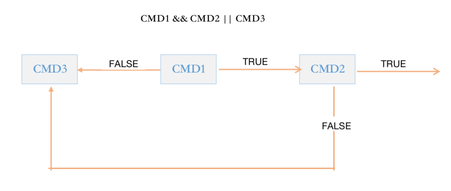

shell 脚本语言的基本用法 shell 脚本的用途
将简单的命令组合完成复杂的工作，自动化执行命令，提高工作效率
减少手工命令的输入，一定程度上避免人为错误
将软件或应用的安装及配置实现标准化
用于实现日常性的,重复性的，非交互式的运维工作，如：文件打包压缩备份,监控系统运行状态并实现告警等
shell 脚本基本结构 shell是基于过程式、解释执行的语言。
shell脚本是包含一些命令或声明，并符合一定格式的文本文件。
一个shell脚本文件中主要包含以下内容
各种系统命令的组合
数据存储：变量、数组
表达式：a + b
控制语句：if
格式要求：首行shebang机制
shell脚本创建过程
用编辑器创建新文件，首行必须是 shell 声明（shebang），编辑完成后保存退出
添加可执行权限
运行脚本
1 2 3 4 5 6 7 8 9 10 11 12 13 14 15 [root@rocky86 ~] echo "hello world" [root@rocky86 ~] [root@rocky86 ~] hello world [root@rocky86 ~] hello world
shell 脚本注释规范 一般要注明作者，创建(修改)时间，文件名，版本号，该程序的功能及作用，目地，版权信息，作者联系方式等
1 2 3 4 5 6 7 8 9 10 11 12 13 14 [root@rocky86 ~] echo "hello world"
配置vim 自动生成注释
1 2 3 4 5 6 7 8 9 10 11 12 13 14 15 16 17 18 19 20 21 22 [root@rocky86 ~] set nu set ts=4 autocmd BufNewFile *.sh exec ":call SetTitle()" func SetTitle() if expand ("%:e" ) == 'sh' call setline(1,"#!/bin/bash" ) call setline(2,"# " ) call setline(3,"# ****************************************************" ) call setline(4,"# Author: jose" ) call setline(5,"# QQ: 123456" ) call setline(6,"# Date: " .strftime("%Y-%m-%d" )) call setline(7,"# FileName: " .expand ("%" )) call setline(8,"# URL: http://www.magedu.com" ) call setline(9,"# Description: test" ) call setline(10,"# Copyright(C): " .strftime("%Y" )." All right" ) call setline(11,"# ***************************************************" ) call setline(12,"" ) call setline(13,"" ) call setline(14,"" ) endif endfunc
第一个 shell 脚本 1 2 3 4 5 6 7 8 9 10 11 12 13 14 15 16 17 [root@rocky86 ~] echo "hello, world" echo 'Hello, world!'
执行
1 2 3 4 5 6 7 8 9 10 11 12 13 14 15 16 17 18 19 20 21 22 23 24 25 26 27 28 29 30 31 32 33 34 35 36 37 38 39 40 [root@rocky86 ~] hello, world Hello, world! [root@rocky86 ~] hello, world Hello, world! [root@rocky86 ~] hello, world Hello, world! [root@rocky86 ~] hello, world Hello, world! [root@rocky86 ~] [root@rocky86 ~] hello, world Hello, world! [root@rocky86 ~] hello, world Hello, world! [root@rocky86 ~] hello, world Hello, world! [root@rocky86 ~] hello, world Hello, world!
本地执行远程脚本
1 2 3 4 5 6 7 8 9 10 11 [root@rocky86 ~] hello, world Hello, world! [root@rocky86 ~] hello, world Hello, world! [root@rocky86 ~] hello, world Hello, world!
在远程主机运行本地脚本
1 2 3 4 5 6 7 8 9 10 11 12 13 [root@rocky86 ~] hostname -I [root@rocky86 ~] 10.0.0.150 [root@rocky86 ~] root@10.0.0.157's password: 10.0.0.157
范例：备份脚本
1 2 3 4 5 #!/bin/bash echo -e "\033[1;32mStarting backup...\033[0m" sleep 2cp -av /etc/ /data/etc`date +%F`/echo -e "\033[1;32mBackup is finished\033[0m"
shell 脚本调试 写一个脚本，获取主机系统信息，包括CPU型号，内存大小，硬盘大小，操作系统版本这四个指标
第一个版本
1 2 3 4 5 6 7 8 9 10 11 12 [root@rocky86 ~] lscpu | sed -nr 's/^Model name: +(.*)/\1/p' cat /proc/meminfo | head -n 1 | tr -s " " | cut -d" " -f2,3 lsblk /dev/sda | grep "^sda" | tr -s " " | cut -d" " -f4 cat /etc/os-release | sed -nr "s/^VERSION=\"(.*)\"/\1/p" [root@rocky86 ~] 11th Gen Intel(R) Core(TM) i7-1185G7 @ 3.00GHz 1828236 kB 200G 8.6 (Green Obsidian)
第二个版本
1 2 3 4 5 6 7 8 9 10 11 12 13 14 15 16 17 18 19 #!/bin/bash echo -e "CPU \c" lscpu | sed -nr 's/^Model name: +(.*)/\1/p' echo -e "Mem \c" cat /proc/meminfo | head -n 1 | tr -s " " | cut -d" " -f2,3echo -e "DISK \c" lsblk /dev/sda | grep "^sda" | tr -s " " | cut -d" " -f4 echo -e "OS \c" cat /etc/os-release | sed -nr "s/^VERSION=\"(.*)\"/\1/p" [root@rocky86 ~] CPU 11th Gen Intel(R) Core(TM) i7-1185G7 @ 3.00GHz Mem 1828236 kB DISK 200G OS 8.6 (Green Obsidian)
第三个版本
1 2 3 4 5 6 7 8 9 10 11 12 13 14 15 16 17 18 19 20 21 22 23 24 25 #!/bin/bash echo -e "========================= sysinfo begin ================\n" echo -e "CPU \c" echo -e "\E[1;32m `lscpu | sed -nr 's/^Model name: +(.*)/\1/p'` \E[0m" echo -e "Mem \c" echo -e "\E[1;32m `cat /proc/meminfo | head -n 1 | tr -s " " | cut -d" " -f2,3` \E[0m" echo -e "DISK \c" echo -e "\E[1;32m `lsblk /dev/sda | grep " ^sda" | tr -s " " | cut -d" " -f4` \E[0m" echo -e "OS \c" echo -e "\E[1;32m `cat /etc/os-release | sed -nr 's/^VERSION=\"(.*)\"/\1/p'` \E[0m" echo -e "\n========================= sysinfo end ==================" [root@rocky86 ~] ========================= sysinfo begin ================ CPU 11th Gen Intel(R) Core(TM) i7-1185G7 @ 3.00GHz Mem 1828236 kB DISK 200G OS 8.6 (Green Obsidian) ========================= sysinfo end ==================
执行前先做语法检查
此选项只能检测脚本中的语法错误，不能检测命令错误，也不会执行脚本
1 2 3 4 5 6 7 8 9 [root@rocky86 ~] echo "hello world" xxxxx lscpu | sed -n p' [root@rocky86 ~]# bash -n test3.sh test3.sh: line 17: unexpected EOF while looking for matching `' ' test3.sh: line 18: syntax error: unexpected end of file
调试并执行
逐行输出命令，并输出执行结果
1 2 3 4 5 6 7 [root@rocky86 ~] + echo 'hello world' hello world + xxxxx test3.sh: line 15: xxxxx: command not found test3.sh: line 17: unexpected EOF while looking for matching `'' test3.sh: line 18: syntax error: unexpected end of file
总结：脚本错误常见的有三种
语法错误：会导致后续的命令不继续执行，可以用 bash -n 检查错误，提示的出错行数不一定是准确的
命令错误：默认后续的命令还会继续执行，用 bash -n 无法检查出来 ，可以使用 bash -x 进行观察
逻辑错误：只能使用 bash -x 进行观察
一个空格引发的血案
1 2 3 4 5 6 7 8 9 10 11 12 13 14 15 16 17 18 19 20 [root@rocky86 ~] cat > test.conf<<EOF $(hostname) $(hostname -I) EOF echo "==== over ====" [root@rocky86 ~] test4.sh: line 18: warning: here-document at line 14 delimited by end-of-file (wanted `EOF') [root@rocky86 ~]# cat -nA test4.sh 1 #!/bin/bash$ 2 $ 3 cat > test.conf<<EOF$ 4 $(hostname)$ 5 $(hostname -I)$ 6 EOF $ # ===================================== 这里多了一个空格 7 echo "==== over ===="$
请问：这是哪种错误？
1 2 3 4 5 sleep $[24*3600]; date +%F date +%F --date ="+ day"
变量 变量 变量表示命名的内存空间，将数据放在内存空间中，通过变量名引用，获取数据
数据要存在内存空间中，而内存空间又是通过内存地址来访问的，但内存地址一般是16进制的编号；
为了方便使用，就有了变量名，当访问一个变量时，实际是访问其对应的内存地址的那块内存空间；
如上图所示
我们要获取 123 ，有两种方式，一种是通过变量名 x，另一种是通过内存地址(指针) 0x7ff995d4412，很明显是通过变量名更方便
变量类型 变量类型：
内置变量，如：PS1，PATH，UID，HOSTNAME，$$，BASHPID，PPID，$?，HISTSIZE
用户自定义变量
不同的变量存放的数据不同，决定了以下
变量数据类型：
字符
数值：整型、浮点型，bash 不支持浮点数
布尔
指针
结构体
编程语言分类
静态和动态语言
静态编译语言：使用变量前，先声明变量类型，之后类型不能改变，在编译时检查，如：java，c
动态编译语言：不用事先声明，可随时改变类型，如：bash，Python
静态类型
1 2 3 4 5 6 7 8 [root@rocky86 ~]# vim test.cpp # include <stdio.h> # include <unistd.h> int main () { int var1=123 ; bool var2=false ; return 0 ; }
动态类型
1 2 3 4 5 6 7 8 [root@rocky86 ~] var1=123 var2="abc" echo $var1 echo $var2
强类型和弱类型语言
强类型语言：不同类型数据操作，必须经过强制转换才同一类型才能运算，如: java ， c# ， python
弱类型语言：语言的运行时会隐式做数据类型转换。无须指定类型，默认均为字符型；参与运算会自动进行隐式类型转换；变量无须事 先定义可直接调用，如：bash ，php，javascript
强类型
1 2 3 4 5 6 7 8 9 10 [root@rocky86 ~] var1='magedu' ; var1+=10 ; var1+=str (20 ); print (var1);
弱类型
1 2 3 4 5 6 [root@rocky86 ~] var1=123 var1+="abc" echo $var1
Shell中变量命名法则 命名要求
区分大小写
不能使程序中的保留字和内置变量：如：if, for
只能使用数字、字母及下划线，且不能以数字开头，注意：不支持短横线 “ - ”，和主机名相反
命名习惯
见名知义，用英文单词命名，并体现出实际作用，不要用简写，如：ATM
变量名大写
局部变量小写
函数名小写
大驼峰StudentFirstName，由多个单词组成，且每个单词的首字母是大写，其它小写
小驼峰studentFirstName ，由多个单词组成，第一个单词的首字母小写，后续每个单词的首字母是大写，其它小写
下划线: student_name
变量定义和引用 变量的生效范围等标准划分变量类型
普通变量：生效范围为当前shell进程；对当前shell之外的其它shell进程，包括当前shell的子shell 进程均无效
环境变量：生效范围为当前shell进程及其子进程
本地变量：生效范围为当前shell进程中某代码片断，通常指函数
变量赋值：
value 可以是以下多种形式
1 2 3 4 name='root' name="$USER " name=`COMMAND` name=$(COMMAND)
注意：变量赋值是临时生效，当退出终端后，变量会自动删除，无法持久保存，脚本中的变量会随着脚本结束，也会自动删除
变量引用：
弱引用和强引用
“$name” 弱引用，其中的变量引用会被替换为变量值
‘$name’ 强引用，其中的变量引用不会被替换为变量值，而保持原字符串
范例：变量的各种赋值方式和引用
1 2 3 4 5 6 7 8 9 10 11 12 13 14 15 16 17 18 19 20 21 22 23 24 25 26 [root@rocky8 ~] [root@rocky8 ~] cto [root@rocky8 ~] I am cto [root@rocky8 ~] I am cto [root@rocky8 ~] I am $TITLE [root@rocky8 ~] [root@rocky8 ~] root [root@rocky8 ~] [root@rocky8 ~] agetty.reload atd.pid auditd.pid console crond.pid cron.reboot cryptsetup dbus dmeventd-client dmeventd-server faillock fsck httpd initctl initramfs irqbalance lock log lvm mariadb motd.d mount NetworkManager openvpn-client openvpn-server plymouth rsyslogd.pid screen sepermit setrans sshd.pid sudo systemd tmpfiles.d tuned udev user utmp vmware [root@rocky8 ~] [root@rocky8 ~] /etc/9sklafdnakljsdf /etc/adjtime /etc/aliases /etc/aliases.db /etc/alternatives /etc/anacrontab /etc/asound.conf /etc/at.deny /etc/audit /etc/authselect /etc/bash_completion.d /etc/bashrc
保留格式
1 2 3 4 5 6 7 8 9 10 11 12 13 14 15 16 17 18 19 20 21 22 23 24 25 26 27 28 29 30 31 [root@rocky8 ~] 1 2 3 4 5 [root@rocky8 ~] [root@rocky8 ~] 1 2 3 4 5 [root@rocky8 ~] 1 2 3 4 5 [root@rocky8 ~] > zhang > zhao > li" [root@rocky8 ~]# echo $NAMES wang zhang zhao li [root@rocky8 ~]# echo " $NAMES " wang zhang zhao li
范例：变量引用
1 2 3 4 5 6 7 8 9 10 11 12 13 14 15 16 17 18 19 [root@centos8 data] [root@centos8 data] [root@centos8 data] mage [root@centos8 data] 20 [root@centos8 data] mage 20 [root@centos8 data] mage20 [root@centos8 data] 20 [root@centos8 data] mage_20
范例：变量的间接赋值和引用
1 2 3 4 5 6 7 8 9 10 11 12 13 14 15 [root@centos8 ~] [root@centos8 ~] [root@centos8 ~] [root@centos8 ~] wang [root@centos8 ~] wang [root@centos8 ~] [root@centos8 ~] mage [root@centos8 ~] wang
范例：变量追加值
1 2 3 4 [root@centos8 ~] [root@centos8 ~] [root@centos8 ~] CTO:wang
范例：利用变量实现动态命令
1 2 3 [root@centos8 ~] [root@centos8 ~] centos8.magedu.com
范例：将sysinfo.sh 中的颜色定义成变量
1 2 3 4 5 6 7 8 9 10 11 12 13 14 15 16 17 18 19 [root@rocky86 ~] COLOR=34 echo -e "========================= sysinfo begin ================\n" echo -e "CPU \c" echo -e "\E[1;${COLOR} m `lscpu | sed -nr 's/^Model name: +(.*)/\1/p'` \E[0m" echo -e "Mem \c" echo -e "\E[1;${COLOR} m `cat /proc/meminfo | head -n 1 | tr -s " " | cut -d" " -f2,3` \E[0m" echo -e "DISK \c" echo -e "\E[1;${COLOR} m `lsblk /dev/sda | grep " ^sda" | tr -s " " | cut -d" " -f4` \E[0m" echo -e "OS \c" echo -e "\E[1;${COLOR} m `cat /etc/os-release | sed -nr 's/^VERSION=\"(.*)\"/\1/p'` \E[0m" echo -e "\n========================= sysinfo end =================="
当前进程和子进程
1 2 3 4 5 6 7 8 9 10 11 [root@rocky86 ~] VAR1=123 VAR2=456 echo "test" echo $BASHPID sleep 20 [root@rocky86 ~]
当前进程中执行
1 2 3 4 5 6 7 8 9 10 11 12 13 14 15 [root@rocky86 ~] 2570 [root@rocky86 ~] test 2570 [root@rocky86 ~] 123 456 [root@rocky86 ~] |-sshd(1009)-+-sshd(2537)---sshd(2562)---bash(2570)---sleep (9403)
子进程中执行
1 2 3 4 5 6 7 8 9 10 11 12 13 14 15 [root@rocky86 ~] 2570 [root@rocky86 ~] test 9501 [root@rocky86 ~] [root@rocky86 ~] [root@rocky86 ~] |-sshd(1009)-+-sshd(2537)---sshd(2562)---bash(2570)---test10.sh(9501)---sleep (9502)
显示已定义的所有变量：
删除变量：
范例：
1 2 3 4 5 6 7 [root@centos8 ~] [root@centos8 ~] [root@centos8 ~] mage ceo [root@centos8 ~] [root@centos8 ~]
范例：显示系统信息
1 2 3 4 5 6 7 8 9 10 11 12 13 14 15 16 17 [root@rocky86 ~] RED="\E[1;31m" GREEN="echo -e \E[1;32m" END="\E[0m" . /etc/os-release $GREEN ----------------------- sysinfo begin --------------------$END echo -e "HOSTNAME: $RED `hostname`$END " echo -e "IPADDR: $RED ` ifconfig ens160|grep -Eo '([0-9]{1,3}\.){3}[0-9]{1,3}' |head -n1`$END " echo -e "IPADDR: $RED ` hostname -I`$END " echo -e "OSVERSION: $RED$PRETTY_NAME$END " echo -e "KERNEL: $RED `uname -r`$END " echo -e "CPU: $RED `lscpu|grep '^Model name'|tr -s ' '|cut -d : -f2`$END " echo -e "MEMORY: $RED `free -h|grep Mem|tr -s ' ' : |cut -d : -f2`$END " echo -e "DISK: $RED `lsblk |grep '^sd' |tr -s ' ' |cut -d " " -f4`$END " $GREEN ----------------------- sysinfo end ----------------------------------$END
环境变量 环境变量：
可以使子进程（包括孙子进程）继承父进程的变量，但是无法让父进程使用子进程的变量
一旦子进程修改从父进程继承的变量，将会新的值传递给孙子进程
一般只在系统配置文件中使用，在脚本中较少使用
变量声明和赋值：
1 2 3 4 5 6 7 export name=VALUEdeclare -x name=VALUEname=VALUE export name
变量引用：
显示所有环境变量：
1 2 3 4 env printenv export declare -x
查看指定进程的环境变量
删除变量：
bash内建的环境变量
1 2 3 4 5 6 7 8 9 10 11 12 PATH SHELL USER UID HOME PWD SHLVL LANG MAIL HOSTNAME HISTSIZE _
范例: 查看进程的环境变量
1 2 3 4 5 6 7 8 9 [root@rocky8 ~] LANG=CPATH=/usr/local/sbin:/usr/local/bin:/usr/sbin:/usr/binNOTIFY_SOCKET=/run/systemd/notifyINVOCATION_ID=03144162b25c48a4b39edcf1597a1530JOURNAL_STREAM=9:27235 [root@rocky8 ~] LANG=C PATH=/usr/local/sbin:/usr/local/bin:/usr/sbin:/usr/bin NOTIFY_SOCKET=/run/systemd/notify INVOCATION_ID=03144162b25c48a4b39edcf1597a1530 JOURNAL_STREAM=9:27235
范例
1 2 3 4 5 6 7 8 9 10 11 12 [root@rocky86 0817] [root@rocky86 0817] echo $var1 echo $var2 echo $PATH echo $PS1 [root@rocky86 0817] 456 /go/bin:/usr/local/sbin:/usr/local/bin:/usr/sbin:/usr/bin:/root/bin
只读变量 只读变量：只能声明定义，但后续不能修改和删除，即常量
声明只读变量：
1 2 readonly namedeclare -r name
查看只读变量：
1 2 readonly [-p]declare -r
范例：
1 2 3 4 5 6 7 8 9 10 11 12 13 14 15 16 17 18 19 20 21 22 23 24 25 26 27 28 29 30 [root@centos8 ~] [root@centos8 ~] 3.14159 [root@centos8 ~] -bash: PI: readonly variable [root@centos8 ~] bash: unset : PI: cannot unset : readonly variable [root@centos8 ~] 3.14159 [root@centos8 ~] logout Connection closed by foreign host. Disconnected from remote host(10.0.0.8) at 14:27:04. Type `help ' to learn how to use Xshell prompt. [c:\~]$ Reconnecting in 1 seconds. Press any key to exit local shell. . Connecting to 10.0.0.8:22... Connection established. To escape to local shell, press ' Ctrl+Alt+]'. WARNING! The remote SSH server rejected X11 forwarding request. Last login: Wed Apr 1 13:51:28 2020 from 10.0.0.1 [root@centos8 ~]# echo $PI [root@centos8 ~]#
位置变量 位置变量：在bash shell中内置的变量, 在脚本代码中调用通过命令行传递给脚本的参数
1 2 3 4 5 6 7 $1 ,$2 ,... $0 $* $@ $#
清空所有位置变量
范例：
1 2 3 4 5 6 7 8 9 10 11 12 13 14 15 16 17 18 19 20 21 22 23 [root@centos8 ~] echo "1st arg is $1 " echo "2st arg is $2 " echo "3st arg is $3 " echo "10st arg is ${10} " echo "11st arg is ${11} " echo "The number of arg is $# " echo "All args are $*" echo "All args are $@ " echo "The scriptname is `basename $0 `" [root@centos8 ~] 1st arg is a 2st arg is b 3st arg is c 10st arg is j 11st arg is k The number of arg is 26 All args are a b c d e f g h i j k l m n o p q r s t u v w x y z All args are a b c d e f g h i j k l m n o p q r s t u v w x y z The scriptname is arg.sh
范例：删库跑路之命令rm的安全实现
1 2 3 4 5 6 7 8 9 10 11 12 13 14 15 [root@centos8 ~] WARNING_COLOR="echo -e \E[1;31m" END="\E[0m" DIR=/tmp/`date +%F_%H-%M-%S` mkdir $DIR mv $* $DIR ${WARNING_COLOR} Move $* to $DIR $END [root@centos8 ~] [root@centos8 ~] [root@centos8 ~] [root@centos8 ~] Move 10.txt 1.txt 2.txt 3.txt 4.txt 5.txt 6.txt 7.txt 8.txt 9.txt to /tmp/2020-04-01_15-15-28
范例：$*和$@的区别
1 2 3 4 5 6 7 8 9 10 11 12 13 14 15 16 17 18 19 20 21 22 23 24 25 [root@centos8 scripts] echo "f1.sh:all args are $@ " echo "f1.sh:all args are $*" ./file.sh "$*" [root@centos8 scripts] echo "f2.sh:all args are $@ " echo "f2.sh:all args are $*" ./file.sh "$@ " [root@centos8 scripts] echo "file.sh:1st arg is $1 " [root@centos8 scripts] f1.sh:all args are a b c f1.sh:all args are a b c file.sh:1st arg is a b c [root@centos8 scripts] f2.sh:all args are a b c f2.sh:all args are a b c file.sh:1st arg is a
范例: 利用软链接实现同一个脚本不同功能
1 2 3 4 5 6 7 8 9 10 11 12 [root@centos8 ~] echo $0 [root@centos8 ~] [root@centos8 ~] [root@centos8 ~] ./a.sh [root@centos8 ~] ./b.sh
退出状态码变量 当我们浏览网页时，有时会看到下图所显示的数字，表示网页的错误信息，我们称为状态码，在shell脚本中也有相似的技术表示程序执行的 相应状态。
进程执行后，将使用变量 $? 保存状态码的相关数字，不同的值反应成功或失败，$?取值范例 0-255
范例：
1 2 ping -c1 -W1 hostdown &> /dev/null echo $?
范例：
1 2 3 [root@centos8 ~] [root@centos8 ~] 0
用户可以在脚本中使用以下命令自定义退出状态码
注意：
脚本中一旦遇到exit命令，脚本会立即终止；终止退出状态取决于exit命令后面的数字
如果exit后面无数字,终止退出状态取决于exit命令前面命令执行结果
如果没有exit命令, 即未给脚本指定退出状态码，整个脚本的退出状态码取决于脚本中执行的最后一 条命令的状态码
展开命令行 展开命令执行顺序
1 2 3 4 5 6 7 8 9 把命令行分成单个命令词 展开别名 展开大括号的声明{} 展开波浪符声明 ~ 命令替换$ () 和 `` 再次把命令行分成命令词 展开文件通配符*、?、[abc]等等 准备I/0重导向 <、> 运行命令
防止扩展
范例：
1 2 3 4 5 [root@centos8 ~] Your cost: $5 .00 [root@rocky8 ~] The book's price is $10
加引号来防止扩展
变量扩展
范例: ``和$() 区别
1 2 3 4 5 6 7 8 9 10 11 12 13 14 15 16 17 18 19 20 21 22 23 [root@centos8 ~] > ^C [root@centos8 ~] \ [root@centos8 ~] > ^C [root@centos8 ~] \ [root@centos8 ~] > ^C [root@centos8 ~] \ [root@centos8 ~] > ^C [root@centos8 ~] \\
脚本安全和 set set 命令：可以用来定制 shell 环境
$- 变量
选项
含义
备份
h
hashall
开启hash表缓存外部命令路径
i
interactive-comments
表示当前是交互是shell
m
monitor
开启监控模式，可通过 Job control来控制进程的停止、继续，后台或者前台执行等
B
braceexpand
是否支持大括号扩展
H
history
是否可用 ! 快速展开history命令
范例：查看
1 2 3 4 5 6 7 8 9 10 11 [root@rocky86 0817] himBHs [root@rocky86 0817] echo $-[root@rocky86 0817] hB
范例：关闭hash缓存功能
1 2 3 4 5 6 7 8 9 10 11 12 13 14 15 16 [root@rocky86 0817] himBHs [root@rocky86 0817] hits command 6 /usr/bin/bash 2 /usr/bin/cat 6 /usr/bin/vim [root@rocky86 0817] [root@rocky86 0817] imBHs [root@rocky86 0817] -bash: hash : hashing disabled
范例：关闭大括号展开
1 2 3 4 5 6 7 8 9 10 11 12 [root@rocky86 0817] imBHs [root@rocky86 0817] 1 2 3 4 5 [root@rocky86 0817] [root@rocky86 0817] imHs [root@rocky86 0817] {1..5}
set 命令实现脚本安全
u
开启此项，在使用一个没有声明的变量时，会报错，并且终止程序，同 set -o nounset
e
开启此项，命令返回非0就退出，不再继续执行后面的代码，同 set -o errexit
o
set -o 显示所有; set -o option 开启 option 项; set +o option 关闭 option 项
x
set -x
-u 在扩展一个没有设置的变量时，显示错误信息， 等同set -o nounset
-e 如果一个命令返回一个非0退出状态值(失败)就退出， 等同set -o errexit
-o option 显示，打开或者关闭选项 显示选项：set -o 打开选项：set -o 选项 关闭选项：set +o 选项
-x 当执行命令时，打印命令及其参数,类似 bash -x
范例：
1 2 3 4 5 6 7 8 9 10 11 12 13 14 15 16 17 18 19 20 21 22 23 24 25 26 27 28 [root@centos8 ~] allexport off braceexpand on emacs on errexit off errtrace off functrace off hashall on histexpand on history on ignoreeof off interactive-comments on keyword off monitor on noclobber off noexec off noglob off nolog off notify off nounset off onecmd off physical off pipefail off posix off privileged off verbose off vi off xtrace off
范例：限制使用没声明的变量
1 2 3 4 5 6 7 8 9 [root@rocky86 0817] set -u DIR=/test rm -rf ${DIr} /* [root@rocky86 0817] set2.sh: line 17: DIr: unbound variable
范例：遇到错误终止
1 2 3 4 5 6 7 8 9 10 11 12 13 14 [root@rocky86 0817] set -eecho 123cd /test2/ rm -rf * echo 456[root@rocky86 0817] 123 set3.sh: line 17: cd : /test2/: No such file or directory
格式化输出 printf 相当于增强版的 echo, 实现丰富的格式化输出
格式
常用格式替换符
替换符 功能
%s
字符串
%d,%i
十进制整数
%f
浮点格式
%c
ASCII字符，即显示对应参数的第一个字符
%b
相对应的参数中包含转义字符时，可以使用此替换符进行替换，对应的转义字符会被转 义
%o
八进制值
%u
不带正负号的十进制值
%x
十六进制值（a-f）
%X
十六进制值（A-F）
%%
表示%本身
说明：
常用转义字符
转义符 功能
\a
警告字符，通常为ASCII的BEL字符
\b
后退
\f
换页
\n
换行
\r
回车
\t
水平制表符
\v
垂直制表符
\
表示\本身
范例：
1 2 3 4 5 6 7 8 9 10 11 12 13 14 15 16 17 18 19 20 21 22 23 24 25 26 27 28 29 30 31 32 33 34 35 36 37 38 39 40 41 42 43 44 45 46 47 48 49 50 51 52 53 54 55 56 57 58 59 60 61 62 63 64 65 [root@centos8 ~] 1234[root@centos8 ~] [root@centos8 ~] 1 2 3 4 [root@centos8 ~] 1.000000 2.000000 3.000000 4.000000 [root@centos8 ~] 1.00 2.00 3.00 4.00 [root@centos8 ~] (1)(2)(3)(4) [root@centos8 ~] (1) (2) (3) (4) [root@centos8 ~] (1) (2) (3) (4) [root@centos8 ~] 1 2 3 4 [root@centos8 ~] 1 2 3 4 [root@centos8 ~] 姓名 性别 年龄 体重 小明 男 20 70 小红 女 18 50 [root@centos8 ~] 11 [root@centos8 ~] 12 [root@rocky8 ~] welcome to Magedu [root@centos8 ~] welcome to Magedu [root@centos8 ~] welcome to Magedu
算术运算 Shell允许在某些情况下对算术表达式进行求值，比如：let和declare 内置命令，(( ))复合命令和算术扩展。求值以固定宽度的整数进行，不检 查溢出，尽管除以0 被困并标记为错误。运算符及其优先级，关联性和值与C语言相同。以下运算符列表分组为等优先级运算符级别。级别按降序排列优先。
注意：bash 只支持整数，不支持小数
1 2 3 4 5 6 7 8 9 10 11 12 13 14 15 16 17 18 + - * / % i++ i-- ++i --i = *= /= %= += -= <<= >>= &= ^= |= - + ! ~ ** << >> <= >= < > == != & | ^ && || expr ?expr :expr expr1 , expr2
乘法符号有些场景中需要转义
实现算术运算：
1 2 3 4 5 6 7 let var=expression((var=expression)) var=$[expression] var=$((expression)) var=$(expr arg1 arg2 ...) declare -i var=numberecho expression|bc
范例：不转义，无法进行算术运算
1 2 3 4 5 6 [root@rocky86 0817] [root@rocky86 0817] i+j [root@rocky86 0817] 123+456
范例：转义
1 2 3 4 5 6 7 8 9 [root@rocky86 0817] [root@rocky86 0817] 579 [root@rocky86 0817] 579 [root@rocky86 0817] 579
范例：expr 命令
1 2 3 4 5 6 7 8 9 [root@rocky86 0817] 10+20 [root@rocky86 0817] 30 [root@rocky86 0817] 200
内建的随机数生成器变量
范例：生成 0 - 49 之间随机数
1 2 3 4 5 6 7 8 [root@rocky86 0817] 6 [root@rocky86 0817] 15 [root@rocky86 0817] 33
范例：随机字体颜色
1 echo -e "\033[1;$[RANDOM%7+31]mhello\033[0m"
增强型赋值：
范例：i++与++i
1 2 3 4 5 [root@rocky86 0817] 2 1 [root@rocky86 0817] 2 2
范例：
1 2 3 4 5 6 7 8 9 10 [root@centos8 ~] [root@centos8 ~] 20 [root@centos8 ~] [root@centos8 ~] 30 [root@rocky8 ~] 11
范例：
1 2 3 4 5 6 7 8 9 [root@centos8 ~] [root@centos8 ~] [root@centos8 ~] 30 [root@centos8 ~] [root@centos8 ~] [root@centos8 ~] 600
范例：自增，自减
1 2 3 4 5 [root@centos8 ~] i=2,j=1 [root@centos8 ~] i=2,j=2
范例：
1 2 3 4 5 6 7 8 [root@centos8 ~] expr : syntax error: unexpected argument ‘anaconda-ks.cfg’ [root@centos8 ~] anaconda-ks.cfg [root@centos8 ~] 6
范例：
范例：
1 2 3 4 5 [root@centos8 ~] [root@centos8 ~] [root@centos8 ~] [root@centos8 ~] 200
范例：
鸡兔同笼，是中国古代著名典型趣题之一，记载于《孙子算经》之中。今有雉兔同笼，上有三十五头，下有九十四足，问雉兔各几何？
让鸡和兔子都抬一条腿到天上去，则地上还有59条腿，分别属于1条腿的鸡和3条腿的兔子，94-35=59；
让鸡和兔子都抬两条腿到天上去，则地上还有24条腿，分别属于0条腿的鸡和2条腿的兔子，59-35=24；
那么，兔子的数量是 24/2=12只，则鸡的数量是 35-12=23只；
1 2 3 4 5 6 7 8 9 10 11 12 [root@centos8 scripts] HEAD=$1 FOOT=$2 RABBIT=$(((FOOT-HEAD-HEAD)/2 )) CHICKEN=$[HEAD-RABBIT] echo RABBIT:$RABBIT echo CHICKEN:$CHICKEN [root@centos8 scripts] RABBIT:10 CHOOK:20
逻辑运算 与或非
true, false
bool值
二进制表示 说明
true
1
真
false
0
假
与：& 和0相与结果为0，和1相与结果保留原值, 一假则假，全真才真
变量 1变量 2与运算 与运算结果
0
0
0&0
0
0
1
0&1
0
1
0
1&0
0
1
1
1&1
1
范例
1 2 3 4 5 6 7 [root@ubuntu1804 ~] [root@ubuntu1804 ~] 2 [root@ubuntu1804 ~] [root@ubuntu1804 ~] 3
或：| 和1相或结果为1，和0相或结果保留原值,一真则真,全假才假
变量 1变量 2或运算 或运算结果
0
0
0|0
0
0
1
0|1
1
1
0
1|0
1
1
1
1|1
1
范例：
1 2 3 4 5 6 7 [root@ubuntu1804 ~] [root@ubuntu1804 ~] 6 [root@ubuntu1804 ~] [root@ubuntu1804 ~] 7
非：！
变量 运算 非运算结果
1
! 1
0
0
! 0
1
异或：^
异或的两个值，相同为假，不同为真。两个数字X,Y异或得到结果Z，Z再和任意两者之一X异或，将得出另一个值Y
变量 1变量 2异或运算 异或运算结果
0
0
0^0
0
0
1
0^1
1
1
0
1^0
1
1
1
1^1
1
范例:
1 2 3 4 5 6 7 8 9 10 11 12 13 14 15 [root@centos8 ~] [root@centos8 ~] 0 [root@centos8 ~] [root@centos8 ~] 1 [root@centos8 ~] [root@centos8 ~] 1 [root@centos8 ~] [root@centos8 ~] 0
范例: 变量互换
1 2 3 4 5 [root@centos8 ~] x=20,y=10 [root@centos8 ~] x=20,y=10
短路运算 短路与 &&
command1值
command2值
短路与运算 短路与运算结果
true
true
cmd1 && cmd2
true
true
false
cmd1 && cmd2
false
false
true
cmd1 && cmd2
false
false
false
cmd1 && cmd2
false
当cmd1 的结果为false时，整个表达式就是 false, cmd2 不参与运算，这就是所谓的短路
短路或 ||
command1值
command2值
短路或运算 短路与运算结果
true
true
cmd1 || cmd2
true
true
false
cmd1 || cmd2
true
false
true
cmd1 || cmd2
true
false
false
cmd1 || cmd2
false
当cmd1 的结果为true时，整个表达式就是 true, cmd2 不参与运算，这就是所谓的短路
短路与和或组合
command1值
command2值
command3值
短路运算 短路与运算结果
true
true
true
cmd1 && cmd2 || cmd3
true
true
true
false
cmd1 && cmd2 || cmd3
true
true
false
true
cmd1 && cmd2 || cmd3
true
true
false
false
cmd1 && cmd2 || cmd3
false
false
true
true
cmd1 && cmd2 || cmd3
true
false
true
false
cmd1 && cmd2 || cmd3
false
false
false
false
cmd1 && cmd2 || cmd3
false
当cmd1 的结果为true时，会执行 cmd2；
当cmd1 的结果为false时，会执行 cmd3；
cmd1 || cmd2 && cmd3 这种语法是错误的，不使用；
条件测试命令 条件测试：
判断某需求是否满足，需要由测试机制来实现，专用的测试表达式需要由测试命令辅助完成测试过程，实现评估布尔声明，以便用在条件性环境下进行执行
若真，则状态码变量 $? 返回0
若假，则状态码变量 $? 返回1
条件测试命令
1 2 3 test expr [ arg... ] [[ expression ]]
注意：[] 中的表达式，前后要有空格
常用选项：文件判断相关
1 2 3 4 5 6 7 8 9 10 11 12 13 14 15 16 17 18 19 20 21 22 23 24 25 26 -a FILE -b FILE -c FILE -d FILE -e FILE -f FILE -g FILE -h FILE -L FILE -k FILE -p FILE -r FILE -s FILE -S FILE -t FD -u FILE -w FILE -x FILE -O FILE -G FILE -N FILE FILE1 -nt FILE2 FILE1 -ot FILE2 FILE1 -ef FILE2
常用选项：字符串判断相关
1 2 3 4 5 6 7 8 9 -z STRING -n STRING STRING STRING1 = STRING2 STRING1 != STRING2 STRING1 < STRING2 STRING1 > STRING2
常用选项：数学相关
1 2 3 4 5 6 7 8 9 10 11 12 13 14 15 16 -eq -ne -lt -le -gt -ge == != <= >= < >
常用选项：其它
1 2 3 4 5 6 -o OPTION -v VAR -R VAR ! EXPR EXPR1 -a EXPR2 EXPR1 -o EXPR2
变量测试 范例：判断变量是否被定义
1 2 3 4 5 6 7 8 9 10 11 12 13 14 15 16 17 18 19 20 21 22 [root@centos8 ~] [root@centos8 ~] [root@centos8 ~] 1 [root@centos8 ~] [root@centos8 ~] [root@centos8 ~] 0 [root@centos8 ~] [root@centos8 ~] [root@centos8 ~] 0 [root@centos8 ~] -bash: [-v: command not found [root@centos8 ~] [root@centos8 ~] 0
数值测试 范例：
1 2 3 4 5 6 7 8 9 10 11 12 [root@centos8 ~] [root@centos8 ~] [root@centos8 ~] [root@centos8 ~] 1 [root@centos8 ~] [root@centos8 ~] 0 [root@centos8 ~] -bash: [: i: integer expression expected
范例：算术表达式比较
1 2 3 4 5 6 7 8 9 10 11 [root@centos8 ~] 0 [root@centos8 ~] 1 [root@centos8 ~] 0 [root@centos8 ~] 1
范例：
1 2 3 4 5 [root@centos8 ~] 1 [root@centos8 ~] 0
字符串测试 test和 [ ] 字符串测试用法
1 2 3 4 5 6 7 8 9 10 -z STRING -n STRING STRING STRING1 = STRING2 STRING1 != STRING2 STRING1 < STRING2 STRING1 > STRING2
[[ ]] 字符串测试用法
1 2 3 4 5 6 7 [[ expression ]] 用法 == =~
建议：当使用正则表达式或通配符使用[[ ]]，其它情况一般使用 [ ]
范例：使用 [ ]
1 2 3 4 5 6 7 8 9 10 11 12 13 14 15 16 17 18 19 20 21 22 23 24 25 26 27 28 29 30 31 32 33 34 35 36 37 38 39 40 41 42 43 44 45 46 47 48 [root@centos8 ~] [root@centos8 ~] [root@centos8 ~] 0 [root@centos8 ~] [root@centos8 ~] [root@centos8 ~] 0 [root@centos8 ~] [root@centos8 ~] [root@centos8 ~] 1 [root@centos8 ~] [root@centos8 ~] 0 [root@centos8 ~] [root@centos8 ~] [root@centos8 ~] 1 [root@centos8 ~] [root@centos8 ~] 1 [root@centos8 ~] [root@centos8 ~] [root@centos8 ~] 0 [root@centos8 ~] [root@centos8 ~] [root@centos8 ~] 0 [root@centos8 ~] [root@centos8 ~] [root@centos8 ~] [root@centos8 ~] 1 [root@centos8 ~] [root@centos8 ~] [root@centos8 ~] 0
范例：在比较字符串时，建议变量放在“ ”中
1 2 3 4 5 6 7 8 9 10 11 [root@centos8 ~] [root@centos8 ~] [root@centos8 ~] -bash: [: love: binary operator expected [root@centos8 ~] [root@centos8 ~] 0 [root@centos8 ~] -bash: [: love: binary operator expected
范例：比较符要转义
1 2 3 4 5 6 7 8 9 10 [root@rocky86 ~] 0 [root@rocky86 ~] 1 [root@rocky86 ~] 0
范例: [[ ]] 和通配符
1 2 3 4 5 6 7 8 9 10 11 12 13 14 15 16 17 18 19 20 21 22 23 24 25 26 27 28 29 30 31 32 33 34 35 36 37 38 39 40 41 42 43 44 45 46 47 48 49 50 51 52 53 54 55 56 57 58 59 60 61 62 63 64 65 66 67 [root@centos8 ~] [root@centos8 ~] a* [root@centos8 ~] [root@centos8 ~] 0 [root@centos8 ~] [root@centos8 ~] [root@centos8 ~] 0 [root@centos8 ~] [root@centos8 ~] [root@centos8 ~] 0 [root@centos8 ~] [root@centos8 ~] [root@centos8 ~] 1 [root@centos8 ~] [root@centos8 ~] 1 [root@centos8 ~] [root@centos8 ~] [root@centos8 ~] 1 [root@centos8 ~] [root@centos8 ~] [root@centos8 ~] 0 [root@centos8 script] [root@centos8 script] [root@centos8 script] 0 [root@centos8 script] [root@centos8 script] [root@centos8 script] 1 [root@centos8 ~] [root@centos8 ~] [root@centos8 ~] 0 [root@centos8 ~] [root@centos8 ~] 1 [root@centos8 ~] [root@centos8 ~] [root@centos8 ~] 0
范例: 判断合理的考试成绩
1 2 3 4 5 6 7 8 9 10 11 12 13 14 15 16 17 18 [root@centos8 script] [root@centos8 script] [root@centos8 script] 0 [root@centos8 script] [root@centos8 script] 1 [root@centos8 script] [root@centos8 script] [root@centos8 script] 0 [root@centos8 script] [root@centos8 script] [root@centos8 script] 1
范例：使用 [[ ]] 判断文件后缀
1 2 3 4 5 6 7 8 9 10 11 12 13 14 15 16 17 18 19 20 21 22 23 24 [root@centos8 ~] [root@centos8 ~] [root@centos8 ~] 0 [root@centos8 ~] [root@centos8 ~] [root@centos8 ~] 1 [root@centos8 ~] [root@centos8 ~] 0 [root@centos8 ~] [root@centos8 ~] 1 [root@centos8 ~] [root@centos8 ~] [root@centos8 ~] 0
范例: 判断合法的非负整数
1 2 3 4 5 6 7 8 9 [root@centos8 ~] [root@centos8 ~] [root@centos8 ~] 0 [root@centos8 ~] [root@centos8 ~] [root@centos8 ~] 1
范例: 判断合法IP
1 2 3 4 5 6 7 8 9 10 11 12 13 [root@centos8 ~] [root@centos8 ~] [root@centos8 ~] 0 [root@centos8 ~] [root@centos8 ~] [root@centos8 ~] 1 [root@centos8 ~] [root@centos8 ~] 1
范例:
1 2 3 4 5 6 7 8 9 10 11 12 13 14 15 [root@centos7 ~] IP=$1 [[ $IP =~ ^(([1 -9 ]?[0 -9 ]|1 [0 -9 ]{2 }|2 [0 -4 ][0 -9 ]|25 [0 -5 ])\.){3 }([1 -9 ]?[0 -9 ]|1 [0 -9 ]{2 }|2 [0 -4 ][0 -9 ]|25 [0 -5 ])$ ]] && echo $IP is valid || echo $IP is invalid
文件测试 范例： -e和-a 表示判断文件的存在性，建议使用-e
1 2 3 4 5 6 7 8 9 10 11 12 13 14 15 16 17 18 19 20 21 22 23 24 25 26 27 28 29 30 31 32 33 34 35 36 37 38 39 40 41 42 43 44 45 46 47 [root@centos8 ~] [root@centos8 ~] 1 [root@centos8 ~] [root@centos8 ~] 0 [root@centos8 ~] [root@centos8 ~] 0 [root@centos8 ~] [root@centos8 ~] 0 [root@centos8 ~] [root@centos8 ~] 1 [root@centos8 ~] [root@centos8 ~] 1 [root@centos8 ~] [root@centos8 ~] 1 [root@centos8 ~] [root@centos8 ~] 0 [root@centos8 ~] [root@centos8 ~] 1 [root@centos8 ~] [root@centos8 ~] 0 [root@centos8 ~] [root@centos8 ~] 1
文件权限测试：
注意：最终结果由用户对文件的实际权限决定，而非文件属性决定
范例:
1 2 3 4 5 6 7 8 9 10 11 12 13 14 15 16 17 18 19 20 21 22 23 24 [root@centos8 ~] [root@centos8 ~] 0 [root@centos8 ~] [root@centos8 ~] 1 [root@centos8 ~] [root@centos8 ~] 0 [root@centos8 ~] [root@centos8 ~] ----i-------------- nianling.txt [root@centos8 ~] [root@centos8 ~] 1 [root@centos8 ~] [root@centos8 ~] [root@centos8 ~] 0
文件属性测试：
1 2 3 4 5 6 7 8 [root@rocky86 ~] 0 [root@rocky86 ~] 1 [root@rocky86 ~] 0
关于 () 和 {} 1 2 3 ( cmd1;cmd2;... ) 和 { cmd1;cmd2;...; } 都可以将多个命令组合在一起，批量执行 ( list ) 会开启子shell,并且list中变量赋值及内部命令执行后,将不再影响后续的环境 { list; } 不会开启子shell, 在当前shell中运行,会影响当前shell环境，左侧要有空格，右侧要有; 结束
范例: () 和 {}
1 2 3 4 5 6 7 8 9 10 11 12 13 14 15 16 17 18 19 20 21 22 23 24 25 26 27 28 29 30 31 32 33 34 35 36 37 38 39 40 41 42 43 44 45 46 47 48 49 50 [root@centos8 ~] mage wang mage [root@centos8 ~] mage wang wang [root@centos8 ~] 0022 [root@centos8 ~] [root@centos8 ~] -rw------- 1 root root 0 Dec 23 16:58 f1.txt [root@centos8 ~] 0022 [root@centos8 ~] test.log [root@centos8 ~] /root [root@centos8 ~] test.log [root@centos8 data] /data [root@centos8 data] [root@centos8 ~] 1920 [root@centos8 ~] 1979 [root@centos8 ~] ├─sshd(719)───sshd(1906)───sshd(1919)─┬─bash(1920)───bash(1979)───sleep (1980) [root@centos8 ~] 1920 [root@centos8 ~] 1920
组合测试条件 第一种方式 1 2 3 4 5 [ EXPRESSION1 -a EXPRESSION2 ] [ EXPRESSION1 -o EXPRESSION2 ] [ ! EXPRESSION ]
说明： -a 和 -o 需要使用测试命令进行，[[ ]] 不支持
范例：
1 2 3 4 5 6 7 8 9 10 11 12 13 14 15 16 17 18 19 20 21 22 23 24 25 26 27 28 29 30 31 32 33 34 35 36 37 [root@centos8 ~] [root@centos8 ~] -rw-r--r-- 1 root root 382 Dec 23 09:32 /data/scripts/test.sh [root@centos8 ~] [root@centos8 ~] 1 [root@centos8 ~] [root@centos8 ~] -rwxr-xr-x 1 root root 382 Dec 23 09:32 /data/script40/test.sh [root@centos8 ~] [root@centos8 ~] 0 [root@centos8 ~] [root@centos8 ~] -rw-r--r-- 1 root root 382 Dec 23 09:32 /data/scripts/test.sh [root@centos8 ~] [root@centos8 ~] 0 [root@centos8 ~] [root@centos8 ~] 1 [root@centos8 ~] [root@centos8 ~] 0 [root@centos8 ~] 0
第二种方式
条件表达式
1 2 3 4 5 6 7 COMMAND1 && COMMAND2 COMMAND1 || COMMAND2 ! COMMAND
范例：
1 2 3 4 5 6 7 8 9 10 11 12 13 14 [root@centos8 ~] [root@centos8 ~] [root@centos8 ~] [root@centos8 ~] [root@centos8 ~] [root@centos8 ~] hostname www.magedu.com [root@centos8 ~] [root@centos8 ~] [root@centos8 ~] zhang:x:1002:1002::/home/zhang:/bin/bash [root@centos8 ~] No such user
范例：
1 2 3 4 5 6 7 8 9 [root@centos8 ~] [root@centos8 ~] 172.16.0.1 is up [root@centos8 ~] 10.0.0.111 is down [root@centos8 ~] 10.0.0.1 is up
条件组合
1 2 COMMAND1 && COMMAND2 || COMMAND3 COMMAND1 || COMMAND2 && COMMAND3

范例：轮盘游戏
范例：&& 和 || 组合使用
1 2 3 4 5 6 7 8 9 10 11 12 13 14 15 16 17 18 19 20 21 22 23 24 25 26 27 28 29 30 31 32 33 34 35 [root@centos8 ~] wang is exist [root@centos8 ~] wange is not exist [root@centos8 ~] wange is not exist [root@centos8 ~] wang is exist [root@centos8 ~] wang is exist [root@centos8 ~] wang is exist [root@centos8 ~] wange is not exist wange is exist [root@centos8 ~] [root@centos8 ~] uid=1002(wange) gid=1002(wange) groups =1002(wange) [root@centos8 ~] wangge is created [root@centos8 ~] uid=1003(wangge) gid=1003(wangge) groups =1003(wangge) [root@centos8 ~] wanggege is created
范例：网络状态判断
1 2 3 4 5 6 7 8 9 10 [root@centos8 ~] IP=172.16.0.1 ping -c1 -W1 $IP &> /dev/null && echo "$IP is up" || { echo "$IP is unreachable" ; exit ; } echo "Script is finished" [root@centos8 ~] 172.16.0.1 is up Script is finished
范例:
范例：磁盘空间的判断
1 2 3 4 [root@centos8 ~] WARNING=80 SPACE_USED=`df |grep '^/dev/sd' |tr -s ' ' %|cut -d% -f5|sort -nr|head -1`[ "$SPACE_USED " -ge $WARNING ] && { echo "disk used is $SPACE_USED ,will be full" ; mail -s diskwarning root; }
范例：磁盘空间和Inode号的检查脚本
1 2 3 4 5 6 7 [root@centos8 scripts] WARNING=80 SPACE_USED=`df | grep '^/dev/sd' |grep -oE '[0-9]+%' |tr -d %| sort -nr|head -1` INODE_USED=`df -i | grep '^/dev/sd' |grep -oE '[0-9]+%' |tr -d %| sort -nr|head -1` [ "$SPACE_USED " -gt $WARNING -o "$INODE_USED " -gt $WARNING ] && echo "DISK USED:$SPACE_USED %,INODE_USED:$INODE_USED ,will be full" | mail -s "DISK Warning" root@wangxiaochun.com
使用read命令来接受输入 使用read来把输入值分配给一个或多个shell变量，read从标准输入中读取值，给每个单词分配一个变 量，所有剩余单词都被分配给最后一 个变量，如果变量名没有指定，默认标准输入的值赋值给系统内置 变量REPLY
格式：
1 2 3 4 5 6 7 8 read [options] [name ...]-p 'PROMPT' -s -n N -d 'CHAR' -t N
范例:
1 2 3 4 5 6 7 8 9 10 11 12 13 14 15 16 17 18 19 20 [root@centos8 ~] M51 [root@centos8 ~] M51 [root@centos8 ~] wang cto [root@centos8 ~] wang [root@centos8 ~] cto [root@centos8 ~] Please input your name: wang [root@centos8 ~] wang
范例：标准输入重定向赋值
1 2 3 4 5 6 7 8 9 10 11 [root@centos8 ~] [root@centos8 ~] I [root@centos8 ~] love [root@centos8 ~] you [root@centos8 ~]
范例：交互式输入参数
1 2 3 4 5 6 7 8 9 10 11 [root@rocky86 ~] read -p "Please input your name: " NAMEread -p "Please input your age: " AGEecho $NAME $AGE [root@rocky86 ~] Please input your name: jose Please input your age: 123 jose 123
范例：管道符
1 2 3 4 5 6 [root@centos8 ~] [root@centos8 ~] [root@centos8 ~] magedu
管道符左右两边都是子进程
1 2 3 4 5 6 7 8 9 10 11 12 13 14 15 16 17 18 19 20 21 22 23 24 25 26 27 [root@rocky86 ~] 2679 2679 [root@rocky86 ~] 2679 6856 [jose@rocky86 ~]$ pstree -p | grep sleep |-sshd(1032)-+-sshd(2648)---sshd(2672)---bash(2679)-+-bash(6855)---sleep (6858) | | `-bash(6856)---sleep (6857) [root@rocky86 ~] 2679 6944 6945 [jose@rocky86 ~]$ pstree -p | grep sleep |-sshd(1032)-+-sshd(2648)---sshd(2672)---bash(2679)-+-bash(6944)---sleep (6946) | | `-bash(6945)---sleep (6947)
范例：面试题 read和输入重定向
1 2 3 4 5 6 7 8 9 10 11 12 13 14 [root@centos8 scripts] 1 2 [root@centos8 scripts] i=1 j=2 [root@centos8 scripts] x= y= [root@centos8 ~] x=1 y=2 [root@centos8 ~] x=1 y=2
范例：判断用户输入的是否为 YES
1 2 3 4 5 [root@centos8 scripts] read -p "Are you rich?yes or no: " ANSWER[[ $ANSWER =~ ^([Yy]|[Yy][Ee][Ss])$ ]] && echo "You are rich" || echo "Good Good Study,Day Day Up!"
范例: 判断用户输入的是否为 YES
1 2 3 4 5 6 7 8 9 10 11 12 13 14 15 16 17 root@ubuntu2004:~ read -p "Please input yes or no: " inputanswer=`echo $input | tr 'A-Z' 'a-z' ` [ $answer = 'yes' -o $answer = 'y' ] && echo YES [ $answer = 'no' -o $answer = 'n' ] && echo NO root@ubuntu2004:~ read -p "Please input yes or no: " input[[ $input =~ ^([Yy][Ee][Ss]|[Yy])$ ]] && echo YES [[ $input =~ ^([Nn][Oo]|[Nn])$ ]] && echo NO
范例: 检查主机的网络状态
1 2 3 4 5 6 7 [root@centos8 script] read -p "Please input a IP: " IP[[ "$IP " =~ ^(([1 -9 ]?[0 -9 ]|1 [0 -9 ]{2 }|2 [0 -4 ][0 -9 ]|25 [0 -5 ])\.){3 }([1 -9 ]?[0 -9 ]|1 [0 -9 ]{2 }|2 [0 -4 ][0 -9 ]|25 [0 -5 ])$ ]] || { echo "IP is invalid";exit; } ping -c1 -W1 $IP &> /dev/null && echo $IP is up || echo $IP is down
bash shell 的配置文件
bash shell的配置文件很多，可以分成下面类别
按生效范围划分两类 全局配置：针对所有用户皆有效
1 2 3 /etc/profile /etc/profile.d/*.sh /etc/bashrc
个人配置：只针对特定用户有效
1 2 ~/.bash_profile ~/.bashrc
shell登录两种方式分类 交互式登录
直接通过终端输入账号密码登录
使用 su - UserName 切换的用户
配置文件生效和执行顺序：
1 2 3 4 5 6 7 8 9 10 11 12 13 14 15 16 /etc/profile /etc/profile.d/*.sh /etc/bashrc ~/ .bash_ profile ~/ .bashrc /etc/bashrc /etc/profile.d/*.sh /etc/bashrc /etc/profile /etc/bashrc ~/.bashrc ~/.bash_profile
注意：文件之间的调用关系，写在同一个文件的不同位置，将影响文件的执行顺序
范例：
1 2 3 4 5 6 7 8 9 10 11 12 13 14 15 16 17 18 19 20 21 22 [root@rocky86 ~] echo "/etc/profile-begin" [root@rocky86 ~] echo "/etc/bashrc-begin" ...... Last login: Thu Aug 18 15:54:00 2022 from 10.0.0.1 /etc/profile-begin /etc/bashrc-begin /etc/bashrc-begin [root@rocky86 ~]
1 2 3 4 5 6 7 8 9 10 11 12 13 14 15 [root@rocky86 ~] ...... echo "/etc/profile-end" [root@rocky86 ~] ...... echo "/etc/bashrc-end" ...... Last login: Thu Aug 18 17:04:11 2022 from 10.0.0.1 /etc/bashrc-end /etc/profile-end /etc/bashrc-end
非交互式登录
su UserName
图形界面下打开的终端
执行脚本
任何其它的bash实例
执行顺序：
1 2 3 /etc/profile.d/*.sh /etc/bashrc ~/.bashrc
按功能划分分类
内容
Profile类
bashrc类
交互式登录shell配置
是
否
非交互式登录shell配置
是
是
全局配置文件
/etc/profile,/etc/profile.d/*.sh
/etc/bashrc
个人配置文件
~/.bash_profile
~/.bashrc
功能作用
定义环境变量，运行命令或脚本
定义命令别名和函数，定义本地变量
编辑配置文件生效 修改profile和bashrc文件后需生效两种方法:
重新启动shell进程
source|. 配置文件
注意：source 会在当前shell中执行脚本,所有一般只用于执行置文件，或在脚本中调用另一个脚本的场景
范例：
Bash 退出任务 保存在~/.bash_logout文件中（用户）,在退出登录shell时运行
功能：
流程控制 条件选择 条件判断分绍 单分支条件
多分支条件
选择执行 if 语句 格式：
1 if COMMANDS; then COMMANDS; [ elif COMMANDS; then COMMANDS;]... [ else COMMANDS; ] fi
单分支
1 2 3 if 判断条件;then 条件为真的分支代码 fi
双分支
1 2 3 4 5 if 判断条件; then 条件为真的分支代码 else 条件为假的分支代码 fi
多分支
1 2 3 4 5 6 7 8 9 10 if 判断条件1; then 条件1为真的分支代码 elif 判断条件2; then 条件2为真的分支代码 elif 判断条件3; then 条件3为真的分支代码 ... else 以上条件都为假的分支代码 fi
说明：
多个条件时，逐个条件进行判断，第一次遇为“真”条件时，执行其分支，而后结束整个if语句
if 语句可嵌套
范例：判断操作系统
1 2 3 4 5 6 7 8 9 10 11 12 13 [root@rocky86 ~] . /etc/os-release if [ $ID = "ubuntu" ]; then echo "ubuntu" elif [[ $ID =~ rocky|centos|rhel ]]; then echo "rhel" else echo "other os" exit 100 fi
范例：
1 2 3 4 5 6 7 8 9 if ping -c1 -W2 station1 &> /dev/null; then echo 'station1 is UP' elif grep -q 'station1' ~/maintenance.txt; then echo 'station1 is undergoing maintenance' else echo 'station1 is unexpectedly DOWN!' exit 1 fi
范例：身体质量指数 (BMI）
参考链接:
1 https://baike.baidu.com/item/标准体重/1694152?fr=aladdin
1 2 3 4 5 6 7 8 9 10 11 12 13 14 15 16 17 18 19 20 21 22 23 24 25 26 [root@rocky86 ~] read -p "请输入身高(m为单位): " HIGHif [[ ! "$HIGH " =~ ^[0-2](\.[0-9]{1,2})?$ ]];then echo "输入错误的身高!" exit 1 fi read -p "请输入体重(kg为单位): " WEIGHTif [[ ! "$WEIGHT " =~ ^[0-9]{1,3}$ ]];then echo "输入错误的体重!" ; exit 2; fi BMI=`echo $WEIGHT /$HIGH ^2|bc` if [ $BMI -le 18 ] ;then echo "太瘦了,多吃点!" elif [ $BMI -lt 24 ] ;then echo "身材很棒!" else echo "太胖了,注意节食,加强运动!" fi
条件判断 case 语句 格式：
1 case WORD in [PATTERN [| PATTERN] ... ) COMMANDS ;;]... esac
1 2 3 4 5 6 7 8 9 10 11 12 case 变量引用 in PAT1) 分支1 ;; PAT2) 分支2 ;; ... *) 默认分支 ;; esac
case支持glob风格的通配符：
范例：判断用户输入
1 2 3 4 5 6 7 8 9 10 11 12 13 14 15 16 17 18 [root@rocky86 ~] read -p "Do you agree(yes/no)? " INPUTINPUT=`echo $INPUT | tr 'A-Z' 'a-z' ` case $INPUT in y|yes ) echo "You input is YES" ;; n|no) echo "You input is NO" ;; *) echo "Input fales,please input yes or no!" ;; esac
范例：判断用户输入
1 2 3 4 5 6 7 8 9 10 11 12 13 14 15 [root@rocky86 ~] read -p "Do you agree(yes/no)" INPUTcase $INPUT in [yY]|[yY][eE][sS]) echo "You input is YES" ;; [nN]|[nN][oO]) echo "You input is NO" ;; *) echo "Input false , please input yes or no!" ;; esac
范例: 文件后缀处理
1 2 3 4 5 6 7 8 9 10 11 12 13 14 15 16 17 18 19 20 21 22 23 24 [root@rocky86 ~] read -p "please input a file: " FILESUFFIX=`echo $FILE | grep -Eo "[^.]+$" ` case $SUFFIX in gz) echo gzip ;; bz2) echo bzip2 ;; xz) echo xz ;; Z) echo compress ;; zip) echo zip ;; *) echo other ;; esac
范例：运维菜单实现版本2
1 2 3 4 5 6 7 8 9 10 11 12 13 14 15 16 17 18 19 20 21 22 23 24 25 26 27 28 29 30 31 32 33 34 35 36 37 [root@rocky86 ~] echo -en "\E[$[RANDOM%7+31];1m" cat <<EOF 请选择： 1）备份数据库 2）清理日志 3）软件升级 4）软件回滚 5）删库跑路 EOF echo -en '\E[0m' read -p "请输入上面数字1-5: " MENUcase $MENU in 1) echo "执行备份数据库" ;; 2) echo "清理日志" ;; 3) echo "软件升级" ;; 4) echo "软件回滚" ;; 5) echo "删库跑路" ;; *) echo "INPUT FALSE!" esac
循环 循环执行介绍 将某代码段重复运行多次，通常有进入循环的条件和退出循环的条件
重复运行次数
常见的循环的命令：for, while, until
程序先进行语句判断，如真则执行循环语句，然后再进行语句判断，直至语句判断失败才跳出；
循环 for 1 2 3 4 5 6 7 8 9 10 11 12 13 14 15 16 17 18 19 20 21 22 23 24 25 26 [root@centos7 ~] for : for NAME [in WORDS ... ] ; do COMMANDS; done Execute commands for each member in a list. The `for ' loop executes a sequence of commands for each member in a list of items. If `in WORDS ...;' is not present, then `in "$@ " ' is assumed. For each element in WORDS, NAME is set to that element, and the COMMANDS are executed. Exit Status: Returns the status of the last command executed. for ((: for (( exp1; exp2; exp3 )); do COMMANDS; done Arithmetic for loop. Equivalent to (( EXP1 )) while (( EXP2 )); do COMMANDS (( EXP3 )) done EXP1, EXP2, and EXP3 are arithmetic expressions. If any expression is omitted, it behaves as if it evaluates to 1. Exit Status: Returns the status of the last command executed.
格式1：
1 2 3 4 5 6 7 8 9 10 11 12 13 for NAME [in WORDS ... ] ; do COMMANDS; done for 变量名 in 列表;do 循环体 done for 变量名 in 列表do 循环体 done
执行机制：
依次将列表中的元素赋值给“变量名”; 每次赋值后即执行一次循环体; 直到列表中的元素耗尽，循环结束
如果省略 [in WORDS … ] ，此时使用位置参数变量 in “$@”
for 循环列表生成方式：
直接给出列表
整数列表：如 {start..end}
返回列表的命令：如 $(COMMAND)
使用glob，如：*.sh
变量引用，如：$@，$*，$#
范例：面试题，计算1+2+3+…+100 的结果
1 2 3 4 5 6 7 8 [root@centos8 ~] sum =5050[root@centos8 ~] 5050 [root@centos8 ~] 5050 [root@centos8 ~] 5050
范例: 100以内的奇数之和
1 2 3 4 5 6 [root@centos8 ~] sum =2500[root@centos8 ~] 2500 [root@centos8 ~] 2500
范例：从变量中获取列表
1 2 3 4 5 6 7 8 9 10 [root@centos8 ~] sum =0for i in $* ; do let sum +=i done echo sum =$sum [root@centos8 ~] sum =21
范例: 批量创建用户
1 2 3 4 5 6 [root@centos8 ~] [ $# -eq 0 ] && { echo "Usage: createuser.sh USERNAME ..." ;exit 1 ; } for user ;do id $user &> /dev/null && echo $user is exist || { useradd $user ; echo $user is created; } done
范例: 批量创建用户和并设置随机密码
1 2 3 4 5 6 7 8 9 [root@centos8 script] for i in {1..10};do useradd user$i PASS=`cat /dev/urandom | tr -dc '[:alnum:]' |head -c12` echo $PASS | passwd --stdin user$i &> /dev/null echo user$i :$PASS >> /data/user.log echo "user$i is created" done
范例: 九九乘法表
1 2 3 4 5 6 7 8 9 10 11 12 13 for i in {1..9};do for j in `seq $i `;do echo -e "${j} * ${i} =$[j*i]\t\c" done echo done for j in {1..9};do for i in `seq $j `;do echo -e "\E[1;$[RANDOM%7+31]m${i} x${j} =$[i*j]\E[0m\t\c" done echo done
范例: 倒状的九九乘法表
1 2 3 4 5 6 for i in {1..9};do for j in $(seq `echo $[10-$i ]`);do echo -ne "${j} x`echo $[10-i]`=$(((10-i) *j))\t" done echo done
生产案例：将指定目录下的文件所有文件的后缀改名为 bak 后缀
1 2 3 4 5 6 DIR=/data/test cd $DIR || { echo 无法进入 $DIR ;exit 1; }for FILE in * ;do PRE=`echo $FILE |grep -Eo ".*\." ` mv $FILE ${PRE} bak done
范例：M37期面试题，要求将目录YYYY-MM-DD/中所有文件，移动到YYYY-MM/DD/下
1 2 3 4 5 6 7 8 9 10 11 12 13 14 15 16 17 18 19 20 21 22 23 24 25 26 [root@centos8 ~] PDIR=/data/test for i in {1..365};do DIR=`date -d "-$i day" +%F` mkdir -pv $PDIR /$DIR cd $PDIR /$DIR for j in {1..10};do touch $RANDOM .log done done DIR=/data/test cd $DIR || { echo 无法进入 $DIR ;exit 1; }for subdir in * ;do YYYY_MM=`echo $subdir |cut -d"-" -f1,2` DD=`echo $subdir |cut -d"-" -f3` [ -d $YYYY_MM /$DD ] || mkdir -p $YYYY_MM /$DD &> /dev/null mv $subdir /* $YYYY_MM /$DD done rm -rf $DIR /*-*-*
面试题：扫描一个网段：192.168.1.0/24，判断此网段中主机在线状态，将在线的主机的IP打印出来
1 2 3 4 5 6 7 8 #!/bin/bash NET=192.168.1 for ID in {1..254}; do { ping -c1 -w1 $NET .$ID &>/dev/null && echo $NET .$ID is up | tee -a host_list.log || echo $NET .$ID is down }& done wait
M47期面试题
1 有若干只兔和鸡，兔和鸡加起来一共有100条腿，请写一个简单的shell算出兔和鸡各多少只可能组合(假设所有的鸡和兔子的腿都是健全的，且兔和鸡至少为1只)
1 2 3 4 5 6 7 8 9 10 11 12 13 14 15 16 17 18 19 20 21 22 23 24 25 26 27 28 29 30 31 32 33 34 35 36 37 38 39 40 41 42 43 #!/bin/bash count=0 for x in {1..100}; do for y in {1..100};do let count++ if [ $[4*x + 2*y] -eq 100 ]; then echo "小白兔=" $x "; 小鸡=" $y fi done done echo "" echo "循环次数: " $count count=0 for x in {1..100}; do for y in {1..100};do let count++ if [ $[4*x + 2*y] -eq 100 ]; then echo "小白兔=" $x "; 小鸡=" $y break fi done done echo "" echo "循环次数: " $count count=0 for x in {1..24}; do for y in {1..48};do let count++ if [ $[4*x + 2*y] -eq 100 ]; then echo "小白兔=" $x "; 小鸡=" $y break fi done done echo "" echo "循环次数: " $count
格式2
双小括号方法，即((…))格式，也可以用于算术运算，双小括号方法也可以使bash Shell实现C语言风格的
变量操作:
1 2 3 4 5 6 for (( exp1; exp2; exp3 )); do COMMANDS; done for ((控制变量初始化;条件判断表达式;控制变量的修正表达式))do 循环体 done
说明：
控制变量初始化：仅在运行到循环代码段时执行一次
控制变量的修正表达式：每轮循环结束会先进行控制变量修正运算，而后再做条件判断
范例:
1 2 3 4 5 6 7 8 9 10 11 12 13 14 #!/bin/bash for ((sum=0 ,i=1 ;i<=100 ;i++));do let sum +=i done echo sum =$sum for ((sum=0 ,i=1 ;i<=100 ;sum+=i,i++));do true done echo sum =$sum [root@ubuntu1804 ~] sum =5050sum =5050
范例:九九乘法表
1 2 3 4 5 6 7 8 9 10 11 12 13 14 for i in {1..9};do for j in `seq $i `;do echo -e "${j} x$i =$((j*i) )\t\c" done echo done for ((i=1 ;i<10 ;i++));do for ((j=1 ;j<=i;j++));do echo -e "${j} x$i =$((j*i) )\t\c" done echo done
范例：等腰三角形
1 2 3 4 5 6 7 8 9 10 11 12 13 14 15 16 17 18 19 20 21 22 23 24 #!/bin/bash read -p "请输入三角形的行数: " linefor ((i=1 ;i<=line;i++));do for ((k=0 ;k<=line-i;k++));do echo -e ' \c' done for ((j=1 ;j<=2 *i-1 ;j++));do echo -e '*\c' done echo done [root@centos8 scripts] 请输入三角形的行数: 10 * *** ***** ******* ********* *********** ************* *************** ***************** *******************
范例：生成进度
1 2 [root@rocky8 ~] 100%[root@rocky8 ~]
循环 while 格式：
1 2 3 4 5 6 7 8 9 10 while COMMANDS; do COMMANDS; done while CONDITION; do 循环体 done while CONDITIONdo 循环体 done
说明：
CONDITION：循环控制条件；进入循环之前，先做一次判断；每一次循环之后会再次做判断；条件为 “true”，则执行一次循环；直到条件测试状态为“false”终止循环，因此：CONDTION一般应该有循环控 制变量；而此变量的值会在循环体不断地被修正
进入条件：CONDITION为 true
退出条件：CONDITION为 false
无限循环
1 2 3 4 5 6 7 while true ; do 循环体 done while : ; do 循环体 done
范例:
范例:
1 2 3 4 5 6 7 8 9 10 11 12 13 14 15 16 17 18 19 20 [root@centos8 ~] set from=29308620@qq.comset smtp=smtp.qq.comset smtp-auth-user=29308620@qq.comset smtp-auth-password=esvnhbnqocirbicfset smtp-auth=loginset ssl-verify=ignore[root@centos8 ~] WARNING=80 while :;do USE=`df | sed -rn '/^\/dev\/sd/s#.* ([0-9]+)%.*#\1#p' |sort -nr|head -n1` if [ $USE -gt $WARNING ];then echo Disk will be full from `hostname -I` | mail -s "disk warning" 29308620@qq.com fi sleep 10 done
范例: 国际象棋棋盘
1 2 3 4 5 6 7 8 9 10 11 12 13 14 15 16 17 18 19 20 21 22 23 24 25 26 27 28 29 30 31 32 33 34 35 36 37 38 39 40 41 42 43 44 45 46 47 #!/bin/bash flag=0 for i in {1..8};do flag=$[$i %2] for j in {1..8};do if [ $[$j %2] = $flag ]; then echo -en "\033[41m \033[0m" ; else echo -en "\033[43m \033[0m" ; fi done echo done echo echo flag=0 for i in {1..8};do flag=$[$i %2] for j in {1..8};do if [ $[$j %2] = $flag ]; then echo -en "\033[41m \033[0m" ; else echo -en "\033[43m \033[0m" ; fi done echo for j in {1..8};do if [ $[$j %2] = $flag ]; then echo -en "\033[41m \033[0m" ; else echo -en "\033[43m \033[0m" ; fi done echo for j in {1..8};do if [ $[$j %2] = $flag ]; then echo -en "\033[41m \033[0m" ; else echo -en "\033[43m \033[0m" ; fi done echo done
while 特殊用法 while read while 循环的特殊用法，遍历文件或文本的每一行
格式：
1 2 3 while read line; do 循环体 done < /PATH/FROM/SOMEFILE
说明：依次读取/PATH/FROM/SOMEFILE文件中的每一行，且将行赋值给变量line
1 2 3 4 5 6 7 8 9 10 11 12 13 14 15 16 [root@centos8 ~] [root@centos8 ~] magedu [root@centos8 ~] magedu [root@centos8 ~] magedu [root@centos8 ~] mage wang zhang [root@centos8 ~] mage wang zhang
范例：检测网站是否可以访问
1 2 3 4 5 6 7 8 9 10 11 12 13 14 15 16 17 [root@rocky86 ~] http://www.baidu.com http://www.google.com http://www.facebook.com http://www.jd.com [root@rocky86 ~] while read url;do curl $url &> /dev/null || echo "$url fail" done < url.txtcat url.txt | while read url;do curl $url &> /dev/null || echo "$url fail" done
范例：查看/sbin/nologin的shell类型的用户名和UID
1 2 3 4 5 6 7 8 [root@rocky86 ~] while read line;do if [[ "$line " =~ /sbin/nologin$ ]];then echo $line | cut -d":" -f1,3 fi done < /etc/passwd
循环 until 格式：
1 2 3 4 5 until CONDITION; do COMMANDS; done until CONDITION; do 循环体 done
说明：
进入条件： CONDITION 为false
退出条件： CONDITION 为true
范例:
1 2 3 4 5 [root@centos8 ~] 5050 [root@rocky86 ~] 5050
无限循环
1 2 3 until false ; do 循环体 Done
循环控制语句 continue continue [N]：提前结束第N层的本轮循环，而直接进入下一轮判断；最内层为第1层
格式：
1 2 3 4 5 6 7 8 9 while CONDITION1; do CMD1 ... if CONDITION2; then continue fi CMDn ... done
范例:
1 2 3 4 5 6 7 8 9 10 11 [root@rocky86 ~] 1 2 4 5 [root@rocky86 0821] 1 2 4 5
范例：循环嵌套中的continue
1 2 3 4 5 6 7 8 9 10 11 12 13 14 15 16 17 18 19 20 21 22 23 [root@rocky86 ~] for i in {1..4}; do for j in {a..c};do if [ $j = 'b' ]; then continue fi echo $i $j done echo done [root@rocky86 ~] 1 a 1 c 2 a 2 c 3 a 3 c 4 a 4 c
continue 2
1 2 3 4 5 6 7 8 9 10 11 12 13 14 15 16 17 18 19 [root@rocky86 ~] for i in {1..4}; do for j in {a..c};do if [ $j = 'b' ]; then continue 2 fi echo $i $j done echo done [root@rocky86 ~] 1 a 2 a 3 a 4 a
循环控制语句 break break [N]：提前结束第N层整个循环，最内层为第1层
格式：
1 2 3 4 5 6 7 8 9 while CONDITION1; do CMD1 ... if CONDITION2; then break fi CMDn ... done
范例:
范例：嵌套循环中的break
1 2 3 4 5 6 7 8 9 10 11 12 13 14 15 16 17 18 19 [root@rocky86 ~] for i in {1..4}; do for j in {a..c};do if [ $j = 'b' ]; then break fi echo $i $j done echo done [root@rocky86 ~] 1 a 2 a 3 a 4 a
break 2
1 2 3 4 5 6 7 8 9 10 11 12 13 14 15 16 17 [root@rocky86 ~] for i in {1..4}; do for j in {a..c};do if [ $j = 'b' ]; then break 2 fi echo $i $j done echo done [root@rocky86 ~] 1 a
范例：猜字游戏
1 2 3 4 5 6 7 8 9 10 11 12 13 14 [root@rocky86 ~] NUM=$[RANDOM%10] while read -p "输入 0-9 之间的数字: " INPUT ;do if [ $INPUT -eq $NUM ];then echo "恭喜你猜对了!" break elif [ $INPUT -gt $NUM ];then echo "数字太大了,重新猜!" else echo "数字太小了,重新猜!" fi done
循环控制 shift 命令 shift [n] 用于将参量列表 list 左移指定次数，缺省为左移一次。
参量列表 list 一旦被移动，最左端的那个参数就从列表中删除。while 循环遍历位置参量列表时，常用到 shift
范例：
1 2 3 4 5 6 7 8 9 10 11 12 13 14 15 16 [root@rocky86 ~] until [ -z "$1 " ]; do echo "$@ " shift done [root@rocky86 ~] a b c d e f g b c d e f g c d e f g d e f g e f g f g g
范例：
1 2 3 4 5 6 7 8 9 10 11 12 13 14 [root@rocky86 ~] while [ -n "$1 " ];do echo $1 shift done [root@rocky86 ~] a b c d
shift 2
1 2 3 4 5 6 7 8 9 10 11 12 13 14 15 16 [root@rocky86 ~] while [ -n "$1 " ];do echo $1 shift 2 if [ $? -ne 0 ];then break fi done [root@rocky86 ~] 1 3 5
范例：批量创建用户
1 2 3 4 5 6 7 8 9 10 11 12 13 14 15 16 17 [root@rocky86 ~] if [ $# -eq 0 ];then echo "Usage: `basename $0 ` user1 user2 ..." exit fi while [ "$1 " ];do if id $1 &> /dev/null;then echo $1 is exist else useradd $1 echo "$1 is created" fi shift done echo "All user is created"
循环与菜单 select 格式：
1 2 3 4 5 select NAME [in WORDS ... ;] do COMMANDS; done select NAME in list ;do 循环体命令 done
说明：
select 循环主要用于创建菜单，按数字顺序排列的菜单项显示在标准错误上，并显示 PS3 提示符， 等待用户输入
用户输入菜单列表中的某个数字，执行相应的命令
用户输入菜单列表中的某个数字，会将对应的WORD值赋值给NAME变量
用户输入被保存在内置变量 REPLY 中
select 是个无限循环，因此要用 break 命令退出循环，或用 exit 命令终止脚本。也可以按 ctrl+c 退出循环
select 经常和 case 联合使用
与 for 循环类似，可以省略 in list，此时使用位置参量
范例：
1 2 3 4 5 6 7 8 9 10 11 12 [root@rocky86 ~] 1) 肯德基 2) 麦当劳 3) 沙县小吃 4) 兰州拉面 中午吃什么: 1 肯德基 中午吃什么: 2 麦当劳 中午吃什么: 100 中午吃什么:
范例：
1 2 3 4 5 6 7 8 9 10 11 12 13 14 15 16 17 18 19 20 21 22 23 24 25 26 27 28 29 [root@rocky86 ~] PS3="请选择: " select i in 备份数据库 清理日志 重启服务 退出; do case $REPLY in 1) echo "开始备份数据库..." sleep 2 echo "数据库备份完成" ;; 2) echo "开始清理日志..." sleep 2 echo "清理完成" ;; 3) echo "开始重启服务..." sleep 2 echo "重启完成" ;; 4) break ;; *) echo "选项错误" ;; esac done
函数 function 函数介绍 函数 function
是由若干条shell命令组成的语句块，实现代码重用和模块化编程
它与shell程序形式上是相似的，不同的是它不是一个单独的进程，不能独立运行，而是shell程序的一部 分
函数和shell程序区别
Shell程序在子Shell中运行
函数在当前Shell中运行。因此在当前Shell中，函数可对shell中变量进行修改
管理函数 函数由两部分组成：函数名和函数体
查看帮助
1 2 3 [root@rocky86 ~] ...... ......
定义函数 1 2 3 4 5 6 7 8 9 10 11 12 13 14 func_name ...函数体... } function func_name { ...函数体... } function func_name ...函数体... }
查看函数 1 2 3 4 5 6 7 8 9 10 11 declare -Fdeclare -fdeclare -f func_name declare -F func_name
删除函数 函数调用 函数的调用方式
可在交互式环境下定义函数
可将函数放在脚本文件中作为它的一部分
可放在只包含函数的单独文件中
调用：函数只有被调用才会执行，通过给定函数名调用函数，函数名出现的地方，会被自动替换为函数代码
函数的生命周期：被调用时创建，返回时终止
交互式环境调用函数 交互式环境下定义和使用函数
1 2 3 4 5 6 7 8 9 10 11 12 13 14 15 [root@rocky86 ~] > echo "this is cli function" > } [root@rocky86 ~] this is cli function [root@rocky86 ~] test_func { echo "this is cli function" }
在脚本中定义及使用函数 函数在使用前必须定义，因此应将函数定义放在脚本开始部分，直至shell首次发现它后才能使用，调用函数仅使用其函数名即可
范例：在脚本中使用函数
1 2 3 4 5 6 7 8 9 10 11 12 13 [root@rocky86 ~] hello echo "this is test function - hello" } hello hello
范例：函数调用函数
1 2 3 4 5 6 7 8 9 10 11 12 13 14 15 16 [root@rocky86 ~] func1 echo "func1" func2 } func2 echo "func2" } func1 [root@rocky86 ~] func1 func2
范例：函数间互相调用，死循环，爆栈，耗尽资源，高级语言会有此错误检测
1 2 3 4 5 6 7 8 9 10 11 12 13 14 15 16 [root@rocky86 ~] func1 echo "func1" sleep 1 func2 } func2 echo "func2" sleep 1 func1 } func1
使用函数文件 可以将经常使用的函数存入一个单独的函数文件，然后将函数文件载入shell，再进行调用函数
函数文件名可任意选取，但最好与相关任务有某种联系，例如：functions
一旦函数文件载入shell，就可以在命令行或脚本中调用函数。
可以使用delcare -f 或set 命令查看所有定 义的函数，其输出列表包括已经载入shell的所有函数
若要改动函数，首先用unset命令从shell中删除函数。改动完毕后，再重新载入此文件
实现函数文件的过程：
创建函数文件，只存放函数的定义
在shell脚本或交互式shell中加载函数文件
调用函数
1 2 3 4 5 6 7 8 9 10 11 12 13 14 15 16 17 18 19 20 21 22 23 24 25 26 27 28 29 30 31 32 33 [root@rocky86 ~] func1 echo "functions-func1" } func2 echo "functions-func2" } [root@rocky86 ~] [root@rocky86 ~] [root@rocky86 ~] functions-func1 functions-func2 [root@rocky86 ~] . functions func1 func2 [root@rocky86 ~] functions-func1 functions-func2
函数返回值 函数默认返回值是函数体中最后一条命令的退出状态码；
也可以使用return 自定义函数的返回值，在函数中使用 return，return 之后的语句将不会被执行
return 的用法：
return语句
返回值
return
由return语句的前一行命令执行结果决定
return 0
无错误返回
return 1-255
有错误返回
范例：获取函数返回值
1 2 3 4 5 6 7 8 9 10 11 12 13 14 15 16 17 18 19 20 21 22 23 24 25 26 27 28 29 30 31 32 33 34 35 36 37 38 39 40 41 42 43 44 45 46 47 48 49 50 51 [root@rocky86 0820] var_func1 echo "func1 =======" } var_func2 echo "func2 =======" return } var_func3 echo "func3 ======" errcmd } var_func4 echo "func4 aaaaaaaaaaaaaa" return 123 echo "func4 bbbbbbbbbb" } var_func1 echo -e "func1 返回值是 $?\n" var_func2 echo -e "func2 返回值是 $?\n" var_func3 echo -e "func3 返回值是 $?\n" var_func4 echo -e "func4 返回值是 $?\n" [root@rocky86 0820] func1 ======= func1 返回值是 0 func2 ======= func2 返回值是 0 func3 ====== var4.sh: line 26: errcmd: command not found func3 返回值是 127 func4 aaaaaaaaaaaaaa func4 返回值是 123
范例：return 和 exit 的区别
return 只会中断函数执行，但exit 会中断整个脚本的执行
1 2 3 4 5 6 7 8 9 10 11 12 13 14 15 16 17 18 19 [root@rocky86 0820] var_func1 echo "func1 =======" return 123 echo "func1 =======" } echo 123var_func1 echo "func1 返回值是 " $?echo 456[root@rocky86 0820] 123 func1 ======= func1 返回值是 123 456
1 2 3 4 5 6 7 8 9 10 11 12 13 14 15 16 17 18 19 [root@rocky86 0820] var_func1 echo "func1 =======" exit 123 echo "func1 =======" } echo 123var_func1 echo "func1 返回值是 " $?echo 456[root@rocky86 0820] 123 func1 ======= [root@rocky86 0820] 123
环境函数 类拟于环境变量，也可以定义环境函数，使子进程也可使用父进程定义的函数
定义环境函数：
1 2 export -f function_name declare -xf function_name
查看环境函数：
范例：定义和查看
1 2 3 4 5 6 7 8 9 10 11 12 13 [root@rocky86 0820] [root@rocky86 0820] cli_func2 { echo "cli-func2" } declare -fx cli_func2which { ( alias ; eval ${which_declare} ) | /usr/bin/which --tty-only --read-alias --read-functions --show-tilde --show-dot$@ } declare -fx which
范例：调用
1 2 3 4 5 6 7 8 9 10 11 12 13 14 15 16 17 18 [root@rocky86 0820] echo "var7 start BASHPID $BASHPID ====================== " cli_func1 cli_func2 echo "var7 end ======================" [root@rocky86 0820] 2259 [root@rocky86 0820] var7 start BASHPID 5122 ====================== ./var7.sh: line 16: cli_func1: command not found cli-func2 var7 end ======================
函数参数 函数可以接受参数：
传递参数给函数：在函数名后面以空白分隔给定参数列表即可，如：testfunc arg1 arg2 …
在函数体中当中，可使用$1, $2, …调用这些参数；还可以使用$@, $*, $#等特殊变量
范例：
1 2 3 4 5 6 7 8 9 10 11 12 [root@rocky86 ~] msg if [ -n "$1 " -a -n "$2 " ];then echo -e "\E[1;$2m$1 \E[0m" fi } msg "ok" 31 msg "fail" 32 msg "FBI-Warning" 34
函数变量 变量作用域：
变量类型
特点
普通变量
只有当前shell进程中有效，函数外定义，可以在函数内修改
环境变量
当前shell和子shell有效
本地变量
作用域在函数内，函数结束会自动销毁
在函数中定义本地变量
示例：普通变量可以在函数中被修改
1 2 3 4 5 6 7 8 9 10 11 12 13 14 15 16 17 18 19 20 21 22 23 24 25 26 27 28 29 30 31 32 33 34 35 36 37 38 39 40 41 42 43 44 45 [root@rocky86 0820] var_func2 echo "func2 start ===================" echo $var1 var1=789 echo $var1 echo "func2 end =====================" } [root@rocky86 0820] . functions var1=123 var_func1 echo "func1 start ===================" echo $var1 var1=456 echo $var1 echo "func1 end ====================" } echo $var1 var_func1 echo $var1 var_func2 echo $var1 [root@rocky86 0820] 123 func1 start =================== 123 456 func1 end ==================== 456 func2 start =================== 456 789 func2 end ===================== 789
示例：本地变量只能在函数内定义
1 2 3 4 5 6 7 8 9 10 [root@rocky86 0820] local var1=123echo $var1 [root@rocky86 0820] var2.sh: line 14: local : can only be used in a function
示例：本地变量只作用在函数内
1 2 3 4 5 6 7 8 9 10 11 12 13 14 15 16 17 18 19 20 21 22 23 [root@rocky86 0820] var1=123 var_func1 echo "func1 start ========================" echo $var1 local var1=456 local var2=789 echo $var1 $var2 echo "func1 end =========================" } echo $var1 $var2 var_func1 echo $var1 $var2 [root@rocky86 0820] 123 func1 start ======================== 123 456 789 func1 end ========================= 123
示例：环境变量可以传到子进程中
1 2 3 4 5 6 7 8 9 10 11 12 13 14 15 16 17 18 19 20 21 22 23 24 25 26 27 28 29 30 31 [root@rocky86 0820] echo -e "var33.sh start BASHPID $BASHPID ==================\n" echo "var1=$var1 var2=$var2 var3=$var3 " echo -e "\nvar33.sh end =====================================\n" [root@rocky86 0820] var1=123 export var2=456declare -x var3=789echo -e "var3.sh start BASHPID $BASHPID ============\n\n" bash var33.sh echo "var1=$var1 var2=$var2 var3=$var3 " [root@rocky86 0820] var3.sh start BASHPID 4490 ============ var33.sh start BASHPID 4491 ================== var1= var2=456 var3=789 var33.sh end ===================================== var1=123 var2=456 var3=789
函数递归 函数递归：
函数直接或间接调用自身，注意递归层数，可能会陷入死循环
递归特点:
函数内部自已调用自已
必须有结束函数的出口语句，防止死循环
范例：无出口递归
1 2 3 4 5 6 7 8 9 10 [root@rocky86 ~] ...... ...... num=8587 Connection closed. Disconnected from remote host(rocky86-150) at 11:44:30. Type `help ' to learn how to use Xshell prompt.
阶乘
阶乘是基斯顿·卡曼（Christian Kramp，1760～1826）于 1808 年发明的运算符号，是数学术语。
一个正整数的阶乘（factorial）是所有小于及等于该数的正整数的积，并且0的阶乘为1。自然数n的阶乘写作n!
阶乘公式
1 2 n!=1×2×3×...×(n-1)×n 0!=1, n!=(n-1)!×n
用递归实现阶乘
1 2 3 4 5 6 7 8 9 10 11 12 13 14 15 [root@rocky86 ~] fac if [ $1 -gt 1 ];then echo $[$1 * $(fac $[$1 -1])] else echo 1 fi } fac $1 [root@rocky86 ~] 120
斐波拉契数列
斐波那契数列（Fibonacci sequence），又称黄金分割数列，因数学家莱昂纳多·斐波那契（Leonardo Fibonacci）以兔子繁殖为例子而引 入，故又称为“兔子数列”
指的是这样一个数列：1、1、2、3、5、8、13、21、34、……
在数学上，斐波那契数列以如下被以递推的方法定义
1 F(0)=0, F(1)=1, F(n)=F(n - 1)+F(n - 2)(n ≥ 2, n ∈ N*)
用递归求斐波拉契数列第N项的值
1 2 3 4 5 6 7 8 9 10 11 12 [root@rocky86 ~] fib if [ $1 -gt 1 ];then echo $[ $[ $(fib $[$1 -1]) + $(fib $[$1 -2]) ] ] else echo $1 fi } fib $1
循环加递归，求和
1 2 3 4 5 6 7 8 9 10 11 12 13 14 15 16 17 18 19 [root@rocky86 ~] fib if [ $1 -gt 1 ];then echo $[ $(fib $[$1 -1]) + $(fib $[$1 -2]) ] else echo $1 fi } sum =0for ((i=$1 ;i<=$2 ;i++));do let sum +=$(fib $i ) done echo $sum [root@rocky86 ~] 143
斐波拉契数列递归算法展开
逻辑炸弹
fork 炸弹是一种恶意程序，它的内部是一个不断在 fork 进程的无限循环，实质是一个简单的递归程序。
由于程序是递归的，如果没有任何限制，这会导致这个简单的程序迅速耗尽系统里面的所有资源
1 2 :(){ :|:& };: bomb
其它脚本相关工具 信号捕捉 trap trap 命令可以捕捉信号，修改信号原来的功能，实现自定义功能
在脚本或程序的执行过程中，我们可以通过发送信号的方式，打断或终止程序的执行过程，为了避免这种情况，我们可以使用信号捕捉，来 自定义信号处理。
格式：
1 2 3 4 5 6 7 8 9 10 trap [-lp] [[arg] signal_spec ...]-l -p trap 'command' signal trap '' signal trap '-' signal trap func EXIT
查看所有信号：
1 2 3 4 5 [root@rocky86 ~] 1) SIGHUP 2) SIGINT 3) SIGQUIT 4) SIGILL 5) SIGTRAP 6) SIGABRT 7) SIGBUS 8) SIGFPE 9) SIGKILL 10) SIGUSR1 ...... ......
信号的三种表示方法
1 2 3 4 5 3) SIGQUIT 3 SIGQUIT QUIT
范例：
1 2 3 4 5 6 7 8 9 10 11 12 13 14 15 16 17 18 19 20 21 22 23 24 25 [root@rocky86 ~] trap "echo '捕捉到了 ctrl+c信号'" inttrap "echo '捕捉到了 ctrl+\信号'" quittrap -pfor i in {1..15};do sleep 1 echo $i done trap '' inttrap -pfor i in {16..30};do sleep 1 echo $i done trap '-' inttrap -pfor i in {31..45};do sleep 1 echo $i done
范例：
1 2 3 4 5 6 7 8 9 10 11 12 13 [root@rocky86 ~] finish echo "finish at `date +%F-%T`" | tee -a /tmp/trap_fin.log } trap finish exit while true ;do echo "`date +%F-%T`" sleep 1 done
创建临时文件 mktemp
mktemp 命令用于创建并显示临时文件，可避免冲突
格式：
1 2 3 4 5 6 7 mktemp [OPTION]... [TEMPLATE]-d|--directory -u|--dry-run -p DIR|--tmpdir[=DIR] -t
范例：
1 2 3 4 5 6 7 8 9 10 11 12 13 14 15 16 17 18 19 20 21 22 23 24 25 26 [root@rocky86 ~] /tmp/tmp.YQXxc3bHdI [root@rocky86 ~] UYtW [root@rocky86 ~] mktemp : too few X's in template ‘test’ [root@rocky86 ~]# mktemp testXXX test19C #创建并赋值给变量 [root@rocky86 ~]# tmp=`mktemp` [root@rocky86 ~]# echo $tmp /tmp/tmp.wQAdrqn1UR #创建目录 [root@rocky86 ~]# mktemp -d /tmp/tmp.2iLac1ruHt [root@rocky86 ~]# ll /tmp/tmp.2iLac1ruHt/ total 0
范例：假删除
1 2 3 4 5 6 [root@rocky86 ~] DIR=`mktemp -d /tmp/trash-$(date +%F_%H-%M-%S)XXXXXX` mv $* $DIR echo $* is move to $DIR
安装复制文件 install install 功能相当于cp，chmod，chown，chgrp ,mkdir 等相关工具的集合
格式
1 2 3 4 5 6 7 8 9 10 11 12 install [OPTION]... [-T] SOURCE DEST install [OPTION]... SOURCE... DIRECTORY install [OPTION]... -t DIRECTORY SOURCE... install [OPTION]... -d DIRECTORY... -m|--mode=MODE -v|--verbose -o|--owner=OWNER -g|--group=GROUP -d|--directory DIR
范例：
1 2 3 4 5 6 7 8 9 10 [root@rocky86 ~] [root@rocky86 ~] drwxrwxrwx. 2 root root 6 May 25 12:46 testdir [root@rocky86 ~] [root@rocky86 ~] -rwxrwxrwx. 1 mage root 153 May 25 12:58 /tmp/fin-tmp.sh
数组 array 数组介绍 变量：存储单个元素的内存空间
数组：存储多个元素的连续的内存空间，相当于多个变量的集合
数组名和索引
索引的编号从0开始，属于数值索引
索引可支持使用自定义的格式，而不仅是数值格式，即为关联索引，bash 4.0版本之后开始支持
bash的数组支持稀疏格式（索引不连续）
声明数组 1 2 3 4 5 declare -a ARRAY_NAMEdeclare -A ARRAY_NAME
注意：两者不可相互转换
数组赋值 一次只赋值一个元素
格式：
范例：
1 2 [root@rocky86 ~] [root@rocky86 ~]
一次赋值全部元素
格式：
1 ARRAY_NAME=("VAL1" "VAL2" "VAL3" ...)
范例：
1 2 3 4 [root@rocky86 ~] [root@rocky86 ~] [root@rocky86 ~] [root@rocky86 ~]
只赋值特定元素
格式：
1 ARRAY_NAME=([0]="VAL1" [3]="VAL2" ...)
范例：
交互式数组值对赋值
格式：
范例：
1 2 [root@rocky86 ~] a b c d
显示所有数组 格式：
范例：
1 2 3 4 5 6 7 8 9 10 11 [root@rocky86 ~] declare -a ARRAY_NAME=([0]="VALUE" )declare -a BASH_ARGC=()declare -a BASH_ARGV=()declare -a BASH_COMPLETION_VERSINFO=([0]="2" [1]="7" )declare -a BASH_LINENO=()declare -ar BASH_REMATCH=()declare -a BASH_SOURCE=()declare -ar BASH_VERSINFO=([0]="4" [1]="4" [2]="20" [3]="1" [4]="release" [5]="x86_64-redhat-linux-gnu" )declare -a DIRSTACK=()......
引用数组 引用特定的数组元素
格式：
范例：
1 2 3 4 5 6 7 8 9 10 11 12 [root@rocky86 ~] [root@rocky86 ~] coo [root@rocky86 ~] ceo [root@rocky86 ~] cto [root@rocky86 ~] [root@rocky86 ~]
区分这三种写法
1 2 3 4 5 6 [root@rocky86 ~] ceo [root@rocky86 ~] ceo [root@rocky86 ~] ceo[0]
引用数组所有元素
格式：
1 2 ${ARRAY_NAME[*]} ${ARRAY_NAME[@]}
范例：
1 2 3 4 5 [root@rocky86 ~] ceo coo cto [root@rocky86 ~] ceo coo cto
遍历数组
1 2 3 4 5 6 7 8 9 10 11 12 13 14 15 16 17 18 19 20 21 22 23 24 25 [root@rocky86 ~] [root@rocky86 ~] a b c d e [root@rocky86 ~] [root@rocky86 ~] a b [root@rocky86 ~] [root@rocky86 ~] a b d e
数组的长度，即数组中元素的个数
格式：
1 2 ${#ARRAY_NAME[*]} ${#ARRAY_NAME[@]}
范例：
数组的所有下标
格式：
1 2 ${!ARRAY_NAME[*]} ${!ARRAY_NAME[@]}
范例：
1 2 3 4 5 [root@rocky86 ~] 0 1 2 [root@rocky86 ~] 0 1 2
删除数组 删除数组中的某元素，会导致稀疏格式
格式：
范例：
1 2 3 4 5 6 [root@rocky86 ~] ceo coo cto [root@rocky86 ~] [root@rocky86 ~] ceo cto
删除整个数组
格式：
范例：
1 2 [root@rocky86 ~] [root@rocky86 ~]
数组数据处理 数组切片
格式：
1 2 3 4 5 6 7 8 9 10 11 ${ARRAY[@]:offset:number} ${ARRAY[*]:offset:number} offset number {ARRAY[@]:offset} {ARRAY[*]:offset}
范例：
1 2 3 4 5 6 7 8 9 [root@rocky86 ~] [root@rocky86 ~] 0 1 2 3 4 5 6 7 8 9 10 [root@rocky86 ~] 2 3 4 [root@rocky86 ~] 6 7 8 9 10
向数组中追加元素
格式：
1 2 ARRAY[${#ARRAY[*]} ]=value ARRAY[${#ARRAY[@]} ]=value
范例：
1 2 3 4 5 6 [root@rocky86 ~] [root@rocky86 ~] 12 [root@rocky86 ~] 0 1 2 3 4 5 6 7 8 9 10 11
关联数组 关联数组与普通数组区别：
关联数组要先声明，才能使用，普通数组可以不用声明
关联数组可以自定义下标，普通数组必须用数字
格式：
1 2 declare -A ARRAY_NAME ARRAY_NAME=([idx_name1]='val1' [idx_name2]='val2‘...)
范例：必须先声明
1 2 3 4 5 6 7 8 9 10 11 12 13 14 15 16 17 18 19 20 21 22 23 24 25 26 27 28 29 30 31 32 33 34 35 36 37 38 39 40 [root@rocky86 ~] [root@rocky86 ~] 123 [root@rocky86 ~] [root@rocky86 ~] 456 [root@rocky86 ~] -bash: declare : test : cannot convert indexed to associative array [root@rocky86 ~] [root@rocky86 ~] [root@rocky86 ~] [root@rocky86 ~] [root@rocky86 ~] mage [root@rocky86 ~] [root@rocky86 ~] zhang [root@rocky86 ~] mage zhang [root@rocky86 ~] mage zhang [root@rocky86 ~] mage zhang
范例：关联数组赋值必须指定下标
1 2 3 4 5 6 7 8 9 10 11 12 13 14 15 16 17 18 19 [root@rocky86 ~] [root@rocky86 ~] -bash: studentList: tom: must use subscript when assigning associative array -bash: studentList: jerry: must use subscript when assigning associative array [root@rocky86 ~] [root@rocky86 ~] jerry tom [root@rocky86 ~] stu2 stu1 [root@rocky86 ~] stu2=jerry stu1=tom
范例：显示所有关联数组下标
1 2 3 [root@rocky86 ~] [root@rocky86 ~] ceo cto coo
范例：
1 2 3 4 5 6 7 8 9 10 11 12 13 14 15 16 17 18 19 20 21 22 23 [root@rocky86 ~] [root@rocky86 ~] [root@rocky86 ~] [root@rocky86 ~] [root@rocky86 ~] [root@rocky86 ~] 16 18 ziqing lijun [root@rocky86 ~] age2 age1 name2 name1 [root@rocky86 ~] student{name1]=lijun student{name2]=ziqing student{name3]= student{name4]= student{name5]= [root@rocky86 ~] lijun: 18 ziqing: 16
范例 生成10个随机数保存于数组中，并找出其最大值和最小值
1 2 3 4 5 6 7 8 9 10 11 12 13 14 15 16 17 18 19 20 21 22 [root@rocky86 ~] declare -i min maxdeclare -a numsfor ((i=0 ;i<10 ;i++));do nums[$i ]=$RANDOM if [ $i -eq 0 ];then min=${nums[0]} max=${nums[0]} else if [ ${nums[$i]} -gt $max ]; then max=${nums[$i]} fi if [ ${nums[$i]} -lt $min ]; then min=${nums[$i]} fi fi done echo "All numbers are ${nums[*]} " echo Max is $max echo Min is $min
管道实现
1 2 3 4 5 6 7 8 9 10 11 12 13 [root@rocky86 ~] declare -a numsfor ((i=0 ;i<10 ;i++));do nums[$i ]=$RANDOM done min=`echo ${nums[*]} | tr ' ' '\n' | sort -n | head -n1` max=`echo ${nums[*]} | tr ' ' '\n' | sort -nr | head -n1` echo "All numbers are ${nums[*]} " echo MAX $max echo MIN $min
字符串处理 字符串切片 基于偏移量取字符串 格式：
1 2 3 4 5 6 ${#var} ${var:offset} ${var:offset:number} ${var: -length} ${var:offset:-length} ${var: -length:-offset}
范例：
1 2 3 4 5 6 7 8 9 10 11 12 13 14 15 16 17 18 19 20 21 22 23 [root@rocky86 ~] [root@rocky86 ~] 8 [root@rocky86 ~] cd1234 [root@rocky86 ~] cd12 [root@rocky86 ~] 234 [root@rocky86 ~] cd123 [root@rocky86 ~] cd12 [root@rocky86 ~] [root@rocky86 ~] 4
基于模式取子串 格式：
1 2 3 4 5 6 7 8 9 ${var#*word} ${var#word} ${var##*word} ${var##word}
范例：
1 2 3 4 5 6 7 8 9 10 11 12 13 14 15 16 [root@rocky86 ~] [root@rocky86 ~] 1234abcd1234 [root@rocky86 ~] cd1234abcd1234 [root@rocky86 ~] 1234 [root@rocky86 ~] cd1234abcd1234
范例：保留文件名
1 2 3 [root@rocky86 ~] [root@rocky86 ~] nginx-1.20.2.tar.gz
1 2 3 4 5 6 7 ${var%word*} ${var%word} ${var%%word*} ${var%%word}
范例：
1 2 3 4 5 6 7 8 9 10 11 12 13 14 15 16 17 [root@rocky86 ~] [root@rocky86 ~] abcd1234 [root@rocky86 ~] abcd1234abcd [root@rocky86 ~] abcd [root@rocky86 ~] abcd1234abcd
范例：
1 2 3 4 5 6 [root@rocky86 ~] [root@rocky86 ~] 8080 [root@rocky86 ~] http
查找替换 格式：
1 2 3 4 5 6 7 8 9 10 11 ${var/pattern/substr} ${var//pattern/substr} ${var/#pattern/substr} ${var/%pattern/substr}
范例：
1 2 3 4 5 6 7 8 9 10 11 12 13 14 15 16 17 [root@rocky86 ~] [root@rocky86 ~] abcdXYZ4abcd12345 [root@rocky86 ~] abcdXYZ4abcdXYZ45 [root@rocky86 ~] XYZd1234abcd12345 [root@rocky86 ~] abcd1234abcdXYZ
查找并删除 格式：
1 2 3 4 5 6 7 8 9 10 11 ${var/pattern} ${var//pattern} ${var/#pattern} ${var/%pattern}
范例：
1 2 3 4 5 6 7 8 9 10 11 12 13 14 15 16 17 [root@rocky86 ~] [root@rocky86 ~] abcdabcd12345 [root@rocky86 ~] abcdabcd5 [root@rocky86 ~] 1234abcd12345 [root@rocky86 ~] abcd1234abcd
字符大小写转换 格式：
范例：
1 2 3 4 5 6 7 8 9 10 11 12 13 [root@rocky86 ~] [root@rocky86 ~] ABCD1234ABCD12345 [root@rocky86 ~] abcd1234abcd12345 [root@rocky86 ~] ABCD1234ABCD12345
变量扩展 格式：
1 2 3 ${!prefix*} ${!prefix@}
范例：模糊匹配变量名
1 2 3 4 5 6 [root@rocky86 ~] [root@rocky86 ~] file1 file2 file3 [root@rocky86 ~] file1 file2 file3
高级变量 高级变量赋值 $str 为变量名，expr 为具体字符串
这些组合可以省掉一些 if，else 的判断代码
变量配置方式
str沒有配置
str为空字符串
str已配置为非空字符串
var=${str-expr}
var=expr
var=
var=$str
var=${str:-expr}
var=expr
var=expr
var=$str
var=${str+expr}
var=
var=expr
var=expr
var=${str:+expr}
var=
var=
var=expr
var=${str=expr}
str=expr; var=expr
str不变; var=
str不变; var=$str
var=${str:=expr}
str=expr; var=expr
str=expr; var=expr
str不变; var=$str
var=${str?expr}
expr 输出至 stderr
var=
var=$str
var=${str:?expr}
expr 输出至 stderr
expr输出至stderr
var=$str
范例：
1 2 3 4 5 6 7 8 9 10 [root@rocky86 ~] [root@rocky86 ~] abc [root@rocky86 ~] [root@rocky86 ~] [root@rocky86 ~] [root@rocky86 ~] xyz
范例：
1 2 3 4 5 6 7 8 9 10 11 12 13 14 [root@rocky86 ~] [root@rocky86 ~] [root@rocky86 ~] ceo [root@rocky86 ~] [root@rocky86 ~] [root@rocky86 ~] mage [root@rocky86 ~] [root@rocky86 ~] [root@rocky86 ~] mage
高级变量用法-有类型变量 Shell变量一般是无类型的，但是bash Shell提供了declare和typeset两个命令用于指定变量的类型，两个命令是等价的
格式：
1 2 3 4 5 6 7 8 9 10 11 12 13 14 declare [-aAfFgilnrtux] [-p] [name[=value] ...]-f -F -p -a -A -i -l -n -r -t -u -x
范例：
1 2 3 4 5 6 7 8 9 10 11 12 13 14 15 16 17 18 19 20 21 22 23 24 25 26 27 28 29 30 31 32 33 34 35 36 37 38 39 40 41 42 43 44 45 46 47 48 49 50 51 52 53 54 55 56 57 58 59 60 61 62 63 64 65 66 [root@rocky86 ~] [root@rocky86 ~] [root@rocky86 ~] [root@rocky86 ~] [root@rocky86 ~] [root@rocky86 ~] [root@rocky86 ~] [root@rocky86 ~] [root@rocky86 ~] [root@rocky86 ~] [root@rocky86 ~] 0 [root@rocky86 ~] [root@rocky86 ~] [root@rocky86 ~] [root@rocky86 ~] 1234abcdabcd [root@rocky86 ~] [root@rocky86 ~] [root@rocky86 ~] 1234 1234 [root@rocky86 ~] [root@rocky86 ~] abcd abcd [root@rocky86 ~] [root@rocky86 ~] xyz xyz [root@rocky86 ~] [root@rocky86 ~] [root@rocky86 ~] -bash: r1: readonly variable [root@rocky86 ~] [root@rocky86 ~] 123
变量间接引用 eval命令 eval命令将会首先扫描命令行进行所有的置换，然后再执行该命令。该命令适用于那些一次扫描无法实现其功能的变量,该命令对变量进行两次扫描
1 2 3 4 5 6 7 8 9 10 11 12 13 14 15 16 17 18 19 20 21 22 23 24 25 26 27 28 29 30 31 32 33 [root@rocky86 ~] [root@rocky86 ~] whoami [root@rocky86 ~] root [root@rocky86 ~] [root@rocky86 ~] {1..6} [root@rocky86 ~] 1 2 3 4 5 6 [root@rocky86 ~] i=1 i=2 i=3 i=4 i=5 i=6 [root@rocky86 ~] [root@rocky86 ~] bash: aabb=cc: command not found... [root@rocky86 ~] [root@rocky86 ~] aabb [root@rocky86 ~] cc
间接变量引用 如果第一个变量的值是第二个变量的名字，从第一个变量引用第二个变量的值就称为间接变量引用variable1的值是variable2，而variable2又是变量名，variable2的值为value，间接变量引用是指通过variable1获得变量值value的行为
格式：
1 2 variable1=variable2 variable2=value
范例：
1 2 3 4 5 6 7 8 [root@rocky86 ~] [root@rocky86 ~] [root@rocky86 ~] str [root@rocky86 ~] $str [root@rocky86 ~] abcd
bash Shell提供了两种格式实现间接变量引用
格式：
1 2 3 4 5 6 7 8 9 10 11 12 13 14 15 16 eval tempvar=\$$variable1 eval echo \$$variable1 eval echo '$' $variable1 echo $tmpvar tempvar=${!variable1} echo ${!variable1}
范例：
1 2 3 4 5 6 7 8 9 10 11 12 13 14 15 [root@rocky86 ~] [root@rocky86 ~] [root@rocky86 ~] mage [root@rocky86 ~] [root@rocky86 ~] mage [root@rocky86 ~] mage [root@rocky86 ~] [root@rocky86 ~] mage
面试题：下面脚本执行结果输出什么
1 2 3 4 5 6 7 8 9 10 11 12 13 [root@rocky86 ~] var local var="$1 " echo "${!var} " } var 1 a var 2 a b var 3 a b c [root@rocky86 ~]